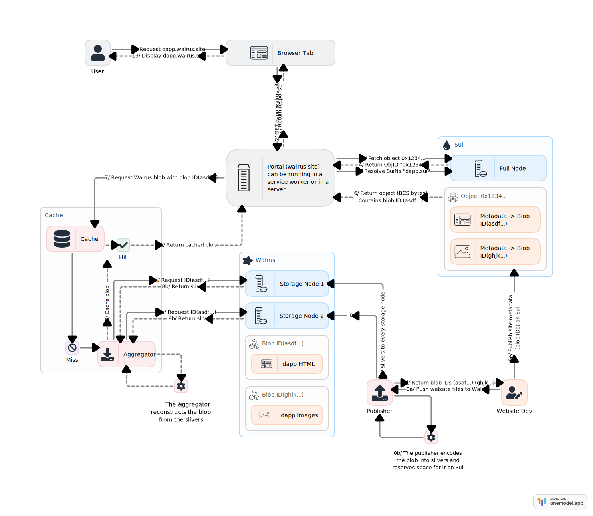
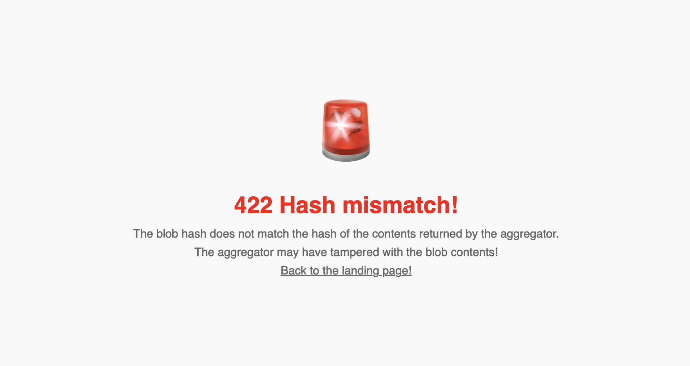

Walrus
Welcome to the developer documentation for Walrus, a decentralized storage and data availability protocol designed specifically for large binary files, or "blobs". Walrus focuses on providing a robust but affordable solution for storing unstructured content on decentralized storage nodes while ensuring high availability and reliability even in the presence of Byzantine faults.
If you are viewing this site at https://docs.walrus.site, you are fetching this from Walrus behind the scenes. See the Walrus Sites chapter for further details on how this works.
The current Testnet release of Walrus and Walrus Sites is a preview intended to showcase the technology and solicit feedback from builders, users, and storage-node operators. All transactions are executed on the Sui Testnet and use Testnet WAL and SUI which have no value. The state of the store can and will be wiped at any point and possibly with no warning. Do not rely on this Testnet for any production purposes, it comes with no availability or persistence guarantees.
Furthermore, encodings and blob IDs may be incompatible with the future Testnet and Mainnet, and developers will be responsible for migrating any Testnet applications and data to Mainnet. Detailed migration guides will be provided when Mainnet becomes available.
Also see the Testnet terms of service under which this Testnet is made available.
All blobs stored in Walrus are public and discoverable by all. Therefore you must not use Walrus to store anything that contains secrets or private data without additional measures to protect confidentiality.
Features
-
Storage and retrieval: Walrus supports storage operations to write and read blobs. It also allows anyone to prove that a blob has been stored and is available for retrieval at a later time.
-
Cost efficiency: By utilizing advanced erasure coding, Walrus maintains storage costs at approximately five times the size of the stored blobs, and encoded parts of each blob are stored on each storage node. This is significantly more cost-effective than traditional full-replication methods and much more robust against failures than protocols that only store each blob on a subset of storage nodes.
-
Integration with the Sui blockchain: Walrus leverages Sui for coordination, attesting availability, and payments. Storage space is represented as a resource on Sui, which can be owned, split, merged, and transferred. Stored blobs are also represented by objects on Sui, which means that smart contracts can check whether a blob is available and for how long, extend its lifetime or optionally delete it.
-
Epochs, tokenomics, and delegated proof of stake Walrus is operated by a committee of storage nodes that evolve between epochs. A native token, WAL (and its subdivision FROST, where 1 WAL is equal to 1 billion FROST), is used to delegate stake to storage nodes, and those with high stake become part of the epoch committee. The WAL token is also used for payments for storage. At the end of each epoch, rewards for selecting storage nodes, storing and serving blobs are distributed to storage nodes and whose that stake with them. All these processes are mediated by smart contracts on the Sui platform.
-
Flexible access: Users can interact with Walrus through a command-line interface (CLI), software development kits (SDKs), and web2 HTTP technologies. Walrus is designed to work well with traditional caches and content distribution networks (CDNs), while ensuring all operations can also be run using local tools to maximize decentralization.
Architecture and operations
Walrus's architecture ensures that content remains accessible and retrievable even when many storage nodes are unavailable or malicious. Under the hood it uses modern error correction techniques based on fast linear fountain codes, augmented to ensure resilience against Byzantine faults, and a dynamically changing set of storage nodes. The core of Walrus remains simple, and storage node management and blob certification leverages Sui smart contracts.
Organization
This documentation is split into several parts:
- Dev blog contains announcements and other blog posts.
- Design describes the objectives, security properties, and architecture of Walrus.
- Usage provides concrete information for developers. If you want to get started quickly, you can jump directly to the setup chapter.
- Walrus Sites describes how you can use Walrus and Sui together to build truly decentralized websites.
Finally, we provide a glossary that explains the terminology used throughout the documentation.
Sources
This documentation is built using mdBook from source files in https://github.com/MystenLabs/walrus-docs/. Please report or fix any errors you find in this documentation in that GitHub project.
The Walrus Dev Blog
This part of the Walrus documentation is used to publish news and updates about Walrus's development!
Announcing Walrus: A Decentralized Storage and Data Availability Protocol
Walrus is an innovative decentralized storage network for blockchain apps and autonomous agents. The Walrus storage system is being released today as a developer preview for Sui builders in order to gather feedback. We expect a broad rollout to other web3 communities very soon!
Leveraging innovations in erasure coding, Walrus enables fast and robust encoding of unstructured data blobs into smaller slivers distributed and stored over a network of storage nodes. A subset of slivers can be used to rapidly reconstruct the original blob, even when up to two-thirds of the slivers are missing. This is possible while keeping the replication factor down to a minimal 4x-5x, similar to existing cloud-based services, but with the additional benefits of decentralization and resilience to more widespread faults.
The Replication Challenge
Sui is the most advanced blockchain system in relation to storage on validators, with innovations such as a storage fund that future-proofs the cost of storing data on-chain. Nevertheless, Sui still requires complete data replication among all validators, resulting in a replication factor of 100x or more in today’s Sui Mainnet. While this is necessary for replicated computing and smart contracts acting on the state of the blockchain, it is inefficient for simply storing unstructured data blobs, such as music, video, blockchain history, etc.
Introducing Walrus: Efficient and Robust Decentralized Storage
To tackle the challenge of high replication costs, Mysten Labs has developed Walrus, a decentralized storage network offering exceptional data availability and robustness with a minimal replication factor of 4x-5x. Walrus provides two key benefits:
-
Cost-Effective Blob Storage: Walrus allows for the uploading of gigabytes of data at a time with minimal cost, making it an ideal solution for storing large volumes of data. Walrus can do this because the data blob is transmitted only once over the network, and storage nodes only spend a fraction of resources compared to the blob size. As a result, the more storage nodes the system has, the fewer resources each storage node uses per blob.
-
High Availability and Robustness: Data stored on Walrus enjoys enhanced reliability and availability under fault conditions. Data recovery is still possible even if two-thirds of the storage nodes crash or come under adversarial control. Further, availability may be certified efficiently without downloading the full blob.
Decentralized storage can take multiple forms in modern ecosystems. For instance, it offers better guarantees for digital assets traded as NFTs. Unlike current designs that store data off-chain, decentralized storage ensures users own the actual resource, not just metadata, mitigating risks of data being taken down or misrepresented.
Additionally, decentralized storage is not only useful for storing data such as pictures or files with high availability; it can also double as a low-cost data availability layer for rollups. Here, sequencers can upload transactions on Walrus, and the rollup executor only needs to temporarily reconstruct them for execution.
We also believe Walrus will accompany existing disaster recovery strategies for millions of enterprise companies. Not only is Walrus low-cost, it also provides unmatched layers of data availability, integrity, transparency, and resilience that centralized solutions by design cannot offer.
Walrus is powered by the Sui Network and scales horizontally to hundreds or thousands of networked decentralized storage nodes. This should enable Walrus to offer Exabytes of storage at costs competitive with current centralized offerings, given the higher assurance and decentralization.
The Future of Walrus
By releasing this developer preview we hope to share some of the design decisions with the decentralized app developer community and gather feedback on the approach and the APIs for storing, retrieving, and certifying blobs. In this developer preview, all storage nodes are operated by Mysten Labs to help us understand use cases, fix bugs, and improve the performance of the software.
Future updates to Walrus will allow for dynamically changing the set of decentralized storage nodes, as well as changing the mapping of what slivers are managed by each storage node. The available operations and tools will also be expanded to cover more storage-related use cases. Many of these functions will be designed with the feedback we gather in mind.
Stay tuned for more updates on how Walrus will revolutionize data storage in the web3 ecosystem.
What can developers build?
As part of this developer preview, we provide a binary client (currently macOS, ubuntu) that can be operated from the command line interface, a JSON API, and an HTTP API. We also offer the community an aggregator and publisher service and a Devnet deployment of 10 storage nodes operated by Mysten Labs.
We hope developers will experiment with building applications that leverage the Walrus Decentralized Store in a variety of ways. As examples, we hope to see the community build:
-
Storage of media for NFT or dapps: Walrus can directly store and serve media such as images, sounds, sprites, videos, other game assets, etc. This is publicly available media that can be accessed using HTTP requests at caches to create multimedia dapps.
-
AI-related use cases: Walrus can store clean data sets of training data, datasets with a known and verified provenance, model weights, and proofs of correct training for AI models. Or it may be used to store and ensure the availability and authenticity of an AI model output.
-
Storage of long term archival of blockchain history: Walrus can be used as a lower-cost decentralized store to store blockchain history. For Sui, this can include sequences of checkpoints with all associated transaction and effects content, as well as historic snapshots of the blockchain state, code, or binaries.
-
Support availability for L2s: Walrus enables parties to certify the availability of blobs, as required by L2s that need data to be stored and attested as available to all. This may also include the availability of extra audit data such as validity proofs, zero-knowledge proofs of correct execution, or large fraud proofs.
-
Support a full decentralized web experience: Walrus can host full decentralized web experiences including all resources (such as js, css, html, and media). These can provide content but also host the UX of dapps, enabling fully decentralized front- and back-ends on chain. It brings the full "web" back into "web3".
-
Support subscription models for media: Creators can store encrypted media on Walrus and only provide access via decryption keys to parties that have paid a subscription fee or have paid for content. (Note that Walrus provides the storage; encryption and decryption must be done off Walrus).
We are excited to see what else the web3 developer community can imagine!
Getting Started
For this developer preview the public Walrus Devnet is openly available to all developers. Developer documentation is available at https://docs.walrus.site.
SUI Testnet token is the main currency for interacting with Walrus. Developers pay for Walrus Devnet storage using SUI Testnet tokens which can be acquired at the Sui Testnet Discord faucet.
One more thing …
The Walrus Sites website, the Walrus docs, and this very blog are hosted on Walrus. To learn more about Walrus Sites and how you can deploy your own, click here.
Devnet Update
Published on: 2024-08-12
We have redeployed the Walrus Devnet to incorporate various improvements to the Walrus storage nodes and clients. In this process, all blobs stored on Walrus were wiped. Note that this may happen again on Devnet and Testnet, but obviously not on the future Mainnet.
Migration and Re-deployment of Walrus Sites
You can obtain the latest version of the walrus binary and the new configuration as described in
the setup chapter.
If you had deployed any Walrus Sites, the site object on Sui and any SuiNS name are still valid.
However, you need to re-store all blobs on Walrus. You can achieve this by running the site-builder
tool (from the walrus-sites directory) as follows:
./target/release/site-builder --config site-builder/assets/builder-example.yaml update --force \
<path to the site> <site object ID>
Changes
Besides many improvements to the storage nodes, the new version of Walrus includes the following user-facing changes:
- Improved coin management: The client now better selects coins for gas and storage fees. Users no longer require multiple coins in their wallet.
- Improved connection management: The client now limits the number of parallel connections to improve performance for users with low network bandwidth storing large blobs.
- OpenAPI specification: Walrus storage nodes, aggregators, and publishers expose their API
specifications at the path
/v1/api. - System info in JSON: The
infocommand is now also available in JSON mode. - Client version: The
walrusCLI now has a--versionoption. - Support for the empty blob: The empty blob is now supported by Walrus.
- Default configuration-file paths: The client now looks for configuration files in
~/.config/walrusin addition to~/.walrusand recognizes the extension.ymlin addition to.yaml. - Home directory in paths: Paths specified in configuration files now expand the
~symbol at the beginning to the user's home directory. - More robust store and status check: The
storeandblob-statuscommands are now more robust against Sui full nodes that aggressively prune past events and against load-balancers that send transactions to different full nodes. - Fix CLI parsing: The
walrusCLI now properly handles hyphens in blob IDs.
This update also increases the number of shards to 1000, which is more representative of the expected value in Testnet and Mainnet.
Announcing the Official Walrus Whitepaper
In June, Mysten Labs announced Walrus, a new decentralized secure blob store design, and introduced a developer preview that currently stores over 12TiB of data. Breaking the Ice gathered over 200 developers to build apps leveraging decentralized storage.
It is time to unveil the next stage of the project: Walrus will become an independent decentralized network with its own utility token, WAL, that will play a key role in the operation and governance of the network. Walrus will be operated by storage nodes through a delegated proof-of-stake mechanism using the WAL token. An independent Walrus foundation will encourage the advancement and adoption of Walrus, and support its community of users and developers.
Today, we published the Walrus whitepaper (also on GitHub) that offers additional details, including:
- The encoding scheme and Read / Write operations Walrus uses to ensure both security and efficient scaling to 100s and 1000s of storage nodes, including interactions with the Sui blockchain which serves as a coordination layer for Walrus’ operations.
- The reconfiguration of storage nodes across epochs, and how the protocol ensures available blobs on Walrus remain available over long periods of time.
- The tokenomics of Walrus based on the WAL token, including how staking and staking rewards are structured, how pricing and payments for storage are handled and distributed in each epoch, and the governance of key system parameters.
- Forward-looking design options, such as a cheap mechanism to challenge and audit storage nodes, options for ensuring reads with a higher service quality, possibly against a payment, and designs that empower light nodes to meaningfully contribute to the protocol’s robustness, serve reads, and be rewarded.
The whitepaper focuses on the steady-state design aspects of Walrus. Further details about the project, such as timelines, opportunities for community participation, how to join the network as a storage node, and plans around light nodes, will be shared in subsequent posts.
To be part of this journey:
- Follow us on Twitter
- Join our Discord
- Build apps on Walrus
- Publish a Walrus Site and share it
Announcing Testnet
Published on: 2024-10-17
Today, a community of operators launches the first public Walrus Testnet. This is an important milestone in validating the operation of Walrus as a decentralized blob store, by operating it on a set of independent storage nodes, that change over time through a delegated proof of stake mechanism. The Testnet also brings functionality updates relating to governance, epochs, and blob deletion.
Blob deletion
The most important user-facing new feature is optional blob deletion. The uploader of a blob can optionally indicate a blob is "deletable". This information is stored in the Sui blob metadata object, and is also included in the event denoting when the blob is certified. Subsequently, the owner of the Sui blob metadata object can "delete" it. As a result storage for the remaining period is reclaimed and can be used by subsequent blob storage operations.
Blob deletion allows more fine-grained storage cost management: smart contracts that wrap blob metadata objects can define logic that stores blobs and delete them to minimize costs, and reclaim storage space before Walrus epochs end.
However, blob deletion is not an effective privacy mechanism in itself: copies of the blob may exist outside Walrus storage nodes on caches and end-user stores or devices. Furthermore, if the identical blob is stored by multiple Walrus users, the blob will still be available on Walrus until no copy exists. Thus deleting your own copy of a blob cannot guarantee that it is deleted from Walrus as a whole.
- Find out how to upload and delete deletable blobs through the CLI.
- Find out more about how delete operations work.
Epochs
Walrus Testnet enables multiple epochs. Initially, the epoch duration is set to a single day to ensure the logic of epoch change is thoroughly tested. At Mainnet, epochs will likely be multiple weeks long.
The progress of epochs makes the expiry epoch of blobs meaningful, and blobs will become unavailable after their expiry epoch. The store command may be used to extend the expiry epoch of a blob that is still available. This operation is efficient and only affects payments and metadata, and does not re-upload blob contents.
- Find out the current epoch through the CLI.
- Find out how to store a blob for multiple epochs.
The WAL token and the Testnet WAL faucet
Payments for blob storage and extending blob expiry are denominated in Testnet WAL, a Walrus token issued on the Sui Testnet. Testnet WAL has no value, and an unlimited supply; so no need to covet or hoard it, it's just for testing purposes and only issued on Sui Testnet.
WAL also has a smaller unit called FROST, similar to MIST for SUI. 1 WAL is equal to 1 billion (1000000000) FROST.
To make Testnet WAL available to all who want to experiment with the Walrus Testnet we provide a utility and smart contract to convert Testnet SUI (which also has no value) into Testnet WAL using a one-to-one exchange rate. This is chosen arbitrarily, and generally one should not read too much into the actual WAL denominated costs of storage on Testnet. They have been chosen arbitrarily.
Find out how to request Testnet WAL tokens through the CLI.
Decentralization through staking & unstaking
The WAL token may also be used to stake with storage operators. Staked WAL can be unstaked and re-staked with other operators or used to purchase storage.
Each epoch storage nodes are selected and allocated storage shards according to their delegated stake. At the end of each epoch payments for storing blobs for the epoch are distributed to storage nodes and those that delegate stake to them. Furthermore, important network parameters (such as total available storage and storage price) are set by the selected storage operators each epoch according to their stake weight.
A staking web dApp is provided to experiment with this functionality. Community members have also created explorers that can be used to view storage nodes when considering who to stake with. Staking ensures that the ultimate governance of Walrus, directly in terms of storage nodes, and indirectly in terms of parameters and software they chose, rests with WAL Token holders.
Under the hood and over the next months we will be testing many aspects of epoch changes and storage node committee changes: better shard allocation mechanisms upon changes or storage node stake; efficient ways to sync state between storage nodes; as well as better ways for storage nodes to follow Sui event streams.
- Explore the Walrus staking dApp.
- Look at recent activity on the Walrus Explorer.
New Move contracts & documentation
As part of the Testnet release of Walrus, the documentation and Move Smart contracts have been
updated, and can be found in the walrus-docs
repository.
New Walrus Sites features
With the move to Walrus Testnet, Walrus Sites have also been updated! The new features in this update greatly increase the flexibility, speed, and security of Walrus Sites. Developers can now specify client-side routing rules, and add custom HTTP headers to the portals' responses for their site, expanding the possibilities for what Walrus Sites can do.
Migrate now to take advantage of these new features! The old Walrus Sites, based on Walrus Devnet, will still be available for a short time. However, Devnet will be wiped soon (as described below), so it is recommended to migrate as soon as possible.
Discontinuation of Walrus Devnet
The previous Walrus Devnet instance is now deprecated and will be shut down after 2024-10-31. All data stored on Walrus Devnet (including Walrus Sites) will no longer be accessible at that point. You need to re-upload all data to Walrus Testnet if you want it to remain accessible. Walrus Sites also need to be migrated.
Announcing Testnet v2
Published on: 2025-01-16
We are today redeploying the Walrus Testnet to incorporate various improvements, including some backwards-incompatible changes. Make sure to get the latest binary and configuration as described in the setup section.
Note that all blob data on the previous Testnet instance has been wiped. All blobs need to be re-uploaded to the new Testnet instance, including Walrus Sites. In addition, there is a new version of the WAL token, so your previous WAL tokens will not work anymore. To use the Testnet v2, you need to obtain new WAL tokens.
In the following sections, we describe the notable changes and the actions required for existing Walrus Sites.
Epoch duration
The epoch duration has been increased from one day to two days to emphasize that this duration is different from Sui epochs (at Mainnet, epochs will likely be multiple weeks long). In addition, the maximum number of epochs a blob can be stored for has been reduced from 200 to 183 (corresponding to one year).
The walrus store command now also supports the --epochs max flag, which will store
the blob for the maximum number of epochs. Note that the --epochs flag is now mandatory.
New features
Besides many improvements to the contracts and the storage-node service, the latest Walrus release also brings several user-facing improvements.
- The
walrus storecommand now supports storing multiple files at once. This is faster and more cost-effective compared to storing each file separately as transactions can be batched through PTBs. Notably, this is compatible with glob patterns offered by many shells, so you can for example run a command likewalrus store *.png --epochs 100to store all PNG files in the current directory. - The
walrusCLI now supports creating, funding, and extending shared blobs using thewalrus share,walrus store --share, andwalrus fund-shared-blobcommands. Shared blobs are an example of collectively managed and funded blobs. See the shared blobs section for more details.
New WAL token
Along with the redeployment of Walrus, we have also deployed a fresh WAL contract. This means that you cannot use any WAL token from the previous Testnet instance with the new Testnet instance. You need to request new WAL tokens through the Testnet WAL faucet.
Backwards-incompatible changes
One reason for a full redeployment is to allow us to make some changes that are backwards-incompatible. Many of those are related to the contracts and thus less visible to users. There are, however, some changes that may affect you.
Configuration files
The format of the configuration files for storage nodes and clients has been changed. Make sure to use the latest version of the configuration files, see the configuration section.
CLI options
Several CLI options of the walrus CLI have been changed. Notably, all "short" variants of options
(e.g., -e instead of --epochs) have been removed to prevent future confusion with new options.
Additionally, the --epochs flag is now mandatory for the walrus store command (this also affects
the JSON API).
Please refer to the CLI help (walrus --help, or walrus <command> --help) for further details.
HTTP APIs
The paths, request, and response formats of the HTTP APIs have changed for the storage nodes, and also the aggregator and publisher. Please refer to the section on the HTTP API for further details.
Effects on and actions required for existing Walrus Sites
The Walrus Sites contracts have not changed, which means that all corresponding objects on Sui are
still valid. However, the resources now point to blob IDs that do not yet exist on the new Testnet.
The easiest way to fix existing sites is to simply update them with the --force flag:
site-builder update --epochs <number of epochs> --force <path to site> <existing site object>
New Move contracts & documentation
As part of the new Testnet release of Walrus, the Move smart contracts have been updated; the
deployed version can be found in the walrus-docs
repository.
Objectives and use cases
Walrus supports operations to store and read blobs, and to prove and verify their availability. It ensures content survives storage nodes suffering Byzantine faults and remains available and retrievable. It provides APIs to access the stored content over a CLI, SDKs and over web2 HTTP technologies, and supports content delivery infrastructures like caches and content distribution networks (CDNs).
Under the hood, storage cost is a small fixed multiple of the size of blobs (around 5x). Advanced erasure coding keeps the cost low, in contrast to the full replication of data traditional to blockchains, such as the >100x multiple for data stored in Sui objects. As a result, storage of much bigger resources (up to several GiB) is possible on Walrus at substantially lower cost than on Sui or other blockchains. Because encoded blobs are stored on all storage nodes, Walrus also provides superior robustness than designs with a small amount of replicas storing the full blob.
Walrus uses the Sui chain for coordination and payments. Available storage is represented as Sui objects that can be acquired, owned, split, merged, and transferred. Storage space can be tied to a stored blob for a period of time, with the resulting Sui object used to prove availability on chain in smart contracts, or off chain using light clients.
The next chapter discusses the above operations relating to storage, retrieval, and availability in detail.
In the future, we plan to include in Walrus some minimal governance to allow storage nodes to change between storage epochs. Walrus is also compatible with periodic payments for continued storage. We also plan to implement storage attestation based on challenges to get confidence that blobs are stored or at least available. Walrus also allows light nodes that store small parts of blobs to get rewards for proving availability and assisting recovery. We will cover these topics in later documents. We also provide details of the encoding scheme in a separate document.
Non-objectives
There are a few things that Walrus explicitly is not:
-
Walrus does not reimplement a CDN that might be geo-replicated or have less than tens of milliseconds of latency. Instead, it ensures that traditional CDNs are usable and compatible with Walrus caches.
-
Walrus does not re-implement a full smart contracts platform with consensus or execution. It relies on Sui smart contracts when necessary, to manage Walrus resources and processes including payments, storage epochs, and so on.
-
Walrus supports storage of any blob, including encrypted blobs. However, Walrus itself is not the distributed key management infrastructure that manages and distributed encryption or decryption keys to support a full private storage eco-system. It can, however, provide the storage layer for such infrastructures.
Use cases
App builders may use Walrus in conjunction with any L1 or L2 blockchains to build experiences that require large amounts of data to be stored in a decentralized manner and possibly certified as available:
-
Storage of media for NFT or dApps: Walrus can directly store and serve media such as images, sounds, sprites, videos, other game assets, and so on. This is publicly available media that is accessed using HTTP requests at caches to create multimedia dApps.
-
AI related use cases: Walrus can store clean data sets of training data, datasets with a known and verified provenance, models, weights and proofs of correct training for AI models. It can also store and ensure the availability of an AI model output.
-
Storage of long term archival of blockchain history: Walrus can act as a lower-cost decentralized store to store blockchain history. For Sui, this can include sequences of checkpoints with all associated transaction and effects content, as well as historic snapshots of the blockchain state, code, or binaries.
-
Support availability for L2s: Walrus allows parties to certify the availability of blobs, as required by L2s that need data to be stored and be attested as available to all. This may also include availability of extra audit data such as validity proofs, zero knowledge proofs of correct execution or large fraud proofs.
-
Support a fully decentralized web experience: Walrus can host fully decentralized web experiences, including all resources (such as js, css, html, media). These can not only provide content, but also host the UX of dApps to enable applications with fully decentralized front end and back ends on chain. Walrus puts the full "web" into web3.
-
Support subscription models for media: Creators can store encrypted media on Walrus and only provide access via decryption keys to parties that have paid a subscription fee or have paid for content. Walrus provides the storage, encryption and decryption needs to happen off the system.
System overview
This chapter provides an overview of the architecture and encoding mechanisms of the Walrus system.
Use the glossary as a reference for many of the bolded terms used in this documentation.
Basic architecture and security assumptions
The key actors in the Walrus architecture are the following:
-
Users through clients want to store and read blobs identified by their blob ID.
These actors are ready to pay for service when it comes to writes and non-best-effort reads. Users also want to prove the availability of a blob to third parties without the cost of sending or receiving the full blob.
Users might be malicious in various ways: they might not want to pay for services, prove the availability of unavailable blobs, modify/delete blobs without authorization, try to exhaust resources of storage nodes, and so on.
-
Storage nodes hold one or many shards within a storage epoch.
Each blob is erasure-encoded into many slivers. Slivers from each stored blob become part of all shards. A shard at any storage epoch is associated with a storage node that actually stores all slivers of the shard and is ready to serve them.
A Sui smart contract controls the assignment of shards to storage nodes within storage epochs, and Walrus assumes that more than 2/3 of the shards are managed by correct storage nodes within each storage epoch. This means that Walrus must tolerate up to 1/3 of the shards managed by Byzantine storage nodes (approximately 1/3 of the storage nodes being Byzantine) within each storage epoch and across storage epochs.
-
All clients and storage nodes operate a blockchain client (specifically on Sui), and mediate payments, resources (space), mapping of shards to storage nodes, and metadata through blockchain smart contracts. Users interact with the blockchain to acquire storage resources and upload certificates for stored blobs. Storage nodes listen to the blockchain events to coordinate their operations.
Walrus supports any additional number of optional infrastructure actors that can operate in a permissionless way:
-
Aggregators are clients that reconstruct blobs from slivers and make them available to users over traditional web2 technologies (such as HTTP). They are optional in that end users may reconstruct blobs directly or run a local aggregator to perform Walrus reads over web2 technologies locally.
-
Caches are aggregators with additional caching functionality to decrease latency and reduce load on storage nodes. Such cache infrastructures may also act as CDNs, split the cost of blob reconstruction over many requests, be better connected, and so on. A client can always verify that reads from such infrastructures are correct.
-
Publishers are clients that help end users store a blob using web2 technologies, using less bandwidth and custom logic.
In effect, they receive the blob to be published over traditional web2 protocols (like HTTP) and run the Walrus store protocol on the end user's behalf. This includes encoding the blob into slivers, distributing the slivers to storage nodes, collecting storage-node signatures and aggregating them into a certificate, as well as all other on-chain actions.
They are optional in that a user can directly interact with Sui and the storage nodes to store blobs. An end user can always verify that a publisher performed their duties correctly by checking that an event associated with the point of availability for the blob exists on chain and then either performing a read to see if Walrus returns the blob or encoding the blob and comparing the result to the blob ID in the certificate.
Aggregators, publishers, and end users are not considered trusted components of the system, and they might deviate from the protocol arbitrarily. However, some of the security properties of Walrus only hold for honest end users that use honest intermediaries (caches and publishers). Walrus provides a means for end users to audit the correct operation of both caches and publishers.
Encoding, overheads, and verification
The following list summarizes the basic encoding and cryptographic techniques used in Walrus:
-
An erasure code encode algorithm takes a blob, splits it into a number of symbols, and encodes it into symbols in such a way that a subset of these symbols can be used to reconstruct the blob.
-
Walrus uses a highly efficient erasure code and selects such that a third of symbols can be used to reconstruct the blob by the decode algorithm.
-
The encoding is systematic, meaning that some storage nodes hold part of the original blob, allowing for fast random-access reads.
-
All encoding and decoding operations are deterministic, and encoders have no discretion about it.
-
For each blob, multiple symbols are combined into a sliver, which is then assigned to a shard.
-
Storage nodes manage one or more shards, and corresponding slivers of each blob are distributed to all the storage shards.
The detailed encoding setup results in an expansion of the blob size by a factor of . This is independent of the number of shards and the number of storage nodes.
Each blob is also associated with some metadata including a blob ID to allow verification:
-
The blob ID is computed as an authenticator of the set of all shard data and metadata (byte size, encoding, blob hash).
Walrus hashes a sliver representation in each of the shards and adds the resulting hashes into a Merkle tree. Then the root of the Merkle tree is the blob hash used to derive the blob ID that identifies the blob in the system.
-
Each storage node can use the blob ID to check if some shard data belongs to a blob using the authenticated structure corresponding to the blob hash (Merkle tree). A successful check means that the data is indeed as intended by the writer of the blob.
-
As the writer of a blob might have incorrectly encoded a blob (by mistake or on purpose), any party that reconstructs a blob ID from shard slivers must check that it encodes to the correct blob ID. The same is necessary when accepting any blob claiming to be a specific blob ID.
This process involves re-encoding the blob using the erasure code, and deriving the blob ID again to check that the blob matches. This prevents a malformed blob (incorrectly erasure coded) from ever being read as a valid blob at any correct recipient.
-
A set of slivers equal to the reconstruction threshold belonging to a blob ID that are either inconsistent or lead to the reconstruction of a different ID represent an incorrect encoding. This happens only if the user that encoded the blob was faulty or malicious and encoded it incorrectly.
Walrus can extract one symbol per sliver to form an inconsistency proof. Storage nodes can delete slivers belonging to inconsistently encoded blobs, and upon request return either the inconsistency proof or an inconsistency certificate posted on chain.
Operations
Walrus operations can be separated in interactions with the Sui chain, which is used by Walrus for coordination and governance, and off-chain interactions between clients and storage nodes.
Operations on Sui
Walrus uses Sui smart contracts to coordinate storage operations as resources that have a lifetime, and payments. Smart contracts also facilitate governance to determine the storage nodes holding each storage shard. The following content outlines these operations and refers to them as part of the read/write paths.
Metadata is the only blob element ever exposed to Sui or its validators, as the content of blobs is always stored off chain on Walrus storage nodes and caches. The storage nodes or caches do not have to overlap with any Sui infrastructure components (such as validators), and the storage epochs can be of different lengths and not have the same start/end times as Sui epochs.
Storage resource life cycle on Sui
A number of Sui smart contracts hold the metadata of the Walrus system and all its entities.
-
A Walrus system object holds the committee of storage nodes for the current storage epoch. The system object also holds the total available space on Walrus and the price per unit of storage (1 KiB).
These values are determined by 2/3 agreement between the storage nodes for the storage epoch. Users can pay to purchase storage space for some time duration. These space resources can be split, merged, and transferred. Later, they can be used to place a blob ID into Walrus.
-
The storage fund holds funds for storing blobs over one or multiple storage epochs. When purchasing storage space from the system object, users pay into the storage fund separated over multiple storage epochs. Payments are made each epoch to storage nodes according to performance (details follow).
-
A user acquires some storage through the contracts or transfer and can assign to it a blob ID, signifying they want to store this blob ID into it. This emits a Move resource event that storage nodes listen for to expect and authorize off-chain storage operations.
-
Eventually a user holds an off-chain availability certificate from storage nodes for a blob ID. The user uploads the certificate on chain to signal that the blob ID is available for an availability period. The certificate is checked against the latest Walrus committee, and an availability event is emitted for the blob ID if correct. This is the point of availability for the blob.
-
At a later time, a certified blob's storage can be extended by adding a storage object to it with a longer expiry period. This facility can be used by smart contracts to extend the availability of blobs stored in perpetuity as long as funds exist to continue providing storage.
-
In case a blob ID is not correctly encoded, an inconsistency proof certificate can be uploaded on chain at a later time. This action emits an inconsistent blob event, signaling that the blob ID read results always return
None. This indicates that its slivers can be deleted by storage nodes, except for an indicator to returnNone.
Users writing to Walrus, need to perform Sui transactions to acquire storage and certify blobs. Users creating or consuming proofs for attestations of blob availability read the chain only to prove or verify emission of events. Nodes read the blockchain to get committee metadata only once per epoch, and then request slivers directly from storage nodes by blob ID to perform reads on Walrus resources.
Governance operations on Sui
Each Walrus storage epoch is represented by the Walrus system object that contains a storage committee and various metadata or storage nodes, like the mapping between shards and storage nodes, available space, and current costs.
Users can go to the system object for the period and buy some storage amount for one or more storage epochs. At each storage epoch there is a price for storage, and the payment provided becomes part of a storage fund for all the storage epochs that span the storage bought. There is a maximum number of storage epochs in the future for which storage can be bought (approximately 2 years). Storage is a resource that can be split, merged, and transferred.
At the end of the storage epoch, part of the funds in the storage fund need to be allocated to storage nodes. The idea here is for storage nodes to perform light audits of each other, and suggest which nodes are to be paid based on the performance of these audits.
Off-chain operations
While Walrus operations happen off Sui, they might interact with the blockchain flows defining the resource life cycle.
Write paths

Systems overview of writes, illustrated in the previous image:
-
A user acquires a storage resource of appropriate size and duration on chain, either by directly buying it on the Walrus system object or a secondary market. A user can split, merge, and transfer owned storage resources.
-
When users want to store a blob, they first erasure code it and compute the blob ID. Then they can perform the following steps themselves, or use a publisher to perform steps on their behalf.
-
The user goes on chain (Sui) and updates a storage resource to register the blob ID with the desired size and lifetime. This emits an event, received by storage nodes. After the user receives they then continue the upload.
-
The user sends the blob metadata to all storage nodes and each of the blob slivers to the storage node that currently manages the corresponding shard.
-
A storage node managing a shard receives a sliver and checks it against the blob ID. It also checks that there is a blob resource with the blob ID that is authorized to store a blob. If correct, the storage node then signs a statement that it holds the sliver for blob ID (and metadata) and returns it to the user.
-
The user puts together the signatures returned from storage nodes into an availability certificate and submits it to the chain. When the certificate is verified on chain, an availability event for the blob ID is emitted, and all other storage nodes seek to download any missing shards for the blob ID. This event emitted by Sui is the point of availability (PoA) for the blob ID.
-
After the PoA, and without user involvement, storage nodes sync and recover any missing metadata and slivers.
The user waits for 2/3 of shard signatures to return to create the certificate of availability. The rate of the code is below 1/3, allowing for reconstruction even if only 1/3 of shards return the sliver for a read. Because at most 1/3 of the storage nodes can fail, this ensures reconstruction if a reader requests slivers from all storage nodes. The full process can be mediated by a publisher that receives a blob and drives the process to completion.
Refresh availability
Because no content data is required to refresh the duration of storage, refresh is conducted fully on chain within the protocol. To request an extension to the availability of a blob, a user provides an appropriate storage resource. Upon success this emits an event that storage nodes receive to extend the time for which each sliver is stored.
Inconsistent resource flow
When a correct storage node tries to reconstruct a sliver for a blob past PoA, this may fail if the encoding of the blob was incorrect. In this case, the storage node can instead extract an inconsistency proof for the blob ID. It then uses the proof to create an inconsistency certificate and upload it on chain.
The flow is as follows:
-
A storage node fails to reconstruct a sliver, and instead computes an inconsistency proof.
-
The storage node sends the blob ID and inconsistency proof to all storage nodes of the Walrus epoch. The storage nodes verify the proof and sign it.
-
The storage node who found the inconsistency aggregates the signatures into an inconsistency certificate and sends it to the Walrus smart contract, which verifies it and emits an inconsistent resource event.
-
Upon receiving an inconsistent resource event, correct storage nodes delete sliver data for the blob ID and record in the metadata to return
Nonefor the blob ID for the availability period. No storage attestation challenges are issued for this blob ID.
A blob ID that is inconsistent always resolves to None upon reading because
the read process re-encodes the received blob to check that the blob ID is correctly derived from a
consistent encoding. This means that an inconsistency proof reveals only a true fact to storage
nodes (that do not otherwise run decoding), and does not change the output of read in any case.
However, partial reads leveraging the systematic nature of the encoding might successfully return partial reads for inconsistently encoded files. Thus, if consistency and availability of reads is important, dApps should do full reads rather than partial reads.
Read paths
A user can read stored blobs either directly or through an aggregator/cache. The operations are the same for direct user access, for aggregators, and caches in case of cache misses. In practice, most reads happen through caches for blobs that are hot and do not result in requests to storage nodes.
-
The reader gets the metadata for the blob ID from any storage node, and authenticates it using the blob ID.
-
The reader then sends a request to the storage nodes for the shards corresponding to the blob ID and waits for to respond. Sufficient requests are sent in parallel to ensure low latency for reads.
-
The reader authenticates the slivers returned with the blob ID, reconstructs the blob, and decides whether the contents are a valid blob or inconsistent.
-
Optionally, for a cache, the result is cached and can be served without reconstruction until it is evicted from the cache. Requests for the blob to the cache return the blob contents, or a proof that the blob is inconsistently encoded.
Challenge mechanism for storage attestation
During an epoch, a correct storage node challenges all shards to provide symbols for blob slivers past PoA:
-
The list of available blobs for the epoch is determined by the sequence of Sui events up to the past epoch. Inconsistent blobs are not challenged, and a record proving this status can be returned instead.
-
A challenge sequence is determined by providing a seed to the challenged shard. The sequence is then computed based both on the seed and the content of each challenged blob ID. This creates a sequential read dependency.
-
The response to the challenge provides the sequence of shard contents for the blob IDs in a timely manner.
-
The challenger node uses thresholds to determine whether the challenge was passed, and reports the result on chain.
-
The challenge/response communication is authenticated.
Challenges provide some reassurance that the storage node can actually recover shard data in a probabilistic manner, avoiding storage nodes getting payment without any evidence they might retrieve shard data. The sequential nature of the challenge and some reasonable timeout also ensures that the process is timely.
Walrus assurance and security properties
The properties below hold true subject to the assumption that for all storage epochs 2/3 of shards are operated by storage nodes that faithfully and correctly follow the Walrus protocol.
As described before, each blob is encoded into slivers using an erasure code and a blob ID is cryptographically derived. For a given blob ID there is a point of availability (PoA) and an availability period, observable through an event on the Sui chain.
The following properties relate to the PoA:
- After the PoA, for a blob ID, any correct user that performs a read within the availability period
will eventually terminate and get a value which is either the blob contents or
None. - After the PoA, if two correct users perform a read and get and , respectively, then .
- A correct user with an appropriate storage resource can always perform store for a blob with a blob ID and advance the protocol until the PoA.
- A read after the PoA for a blob stored by a correct user, will result in .
Some assurance properties ensure the correct internal processes of Walrus storage nodes. For the purposes of defining these, an inconsistency proof proves that a blob ID was stored by a user that incorrectly encoded a blob.
- After the PoA and for a blob ID stored by a correct user, a storage node is always able to recover the correct slivers for its shards for this blob ID.
- After the PoA, if a correct storage node cannot recover a sliver, it can produce an inconsistency proof for the blob ID.
- If a blob ID is stored by a correct user, an inconsistently proof cannot be derived for it.
- A read by a correct user for a blob ID for which an inconsistency proof may exist returns
None.
Note that there is no delete operation and a blob ID past the PoA will be available for the full availability period.
Before the PoA it is the responsibility of a client to ensure the availability of a blob and its upload to Walrus. After the PoA it is the responsibility of Walrus as a system to maintain the availability of the blob as part of its operation for the full availability period remaining. Emission of the event corresponding to the PoA for a blob ID attests its availability.
Future discussion
In this document, we left out details of the following features:
- Shard transfer and recovery upon storage epoch change: The encoding scheme used in Walrus has been designed to allow for highly efficient recovery in case of shard failures. A storage node attempting to recover slivers only needs to get data of the same magnitude as the missing data to reconstruct them.
- Details of light clients that can be used to sample availability: Individual clients may sample the certified blobs from Sui metadata and sample the availability of some slivers that they store. On-chain bounties may be used to retrieve these slivers for missing blobs.
Setup
At this stage of the project, our Walrus code is not yet public. Instead, we provide a pre-compiled
walrus client binary for macOS (Intel and Apple CPUs) and Ubuntu, which supports different usage
patterns (see the next chapter). This chapter describes the
prerequisites, installation, and configuration
of the Walrus client.
Prerequisites: Sui wallet and Testnet SUI
If you just want to set up a new Sui wallet for Walrus, you can skip this section and use the
walrus generate-sui-wallet command after installing Walrus. In that case, make
sure to set the wallet_config parameter in the Walrus
configuration to the newly generated wallet. Also, make sure to
obtain some Testnet SUI tokens from the Sui Testnet faucet.
Interacting with Walrus requires a valid Sui Testnet wallet with some amount of SUI tokens. The normal way to set this up is via the Sui CLI; see the installation instructions in the Sui documentation.
After installing the Sui CLI, you need to set up a Testnet wallet by running sui client, which
prompts you to set up a new configuration. Make sure to point it to Sui Testnet, you can use the
full node at https://fullnode.testnet.sui.io:443 for this. See
here for further details.
If you already have a Sui wallet configured, you can directly set up the Testnet environment (if you don't have it yet),
sui client new-env --alias testnet --rpc https://fullnode.testnet.sui.io:443
and switch the active environment to it:
sui client switch --env testnet
After this, you should get something like this (everything besides the testnet line is optional):
$ sui client envs
╭──────────┬─────────────────────────────────────┬────────╮
│ alias │ url │ active │
├──────────┼─────────────────────────────────────┼────────┤
│ devnet │ https://fullnode.devnet.sui.io:443 │ │
│ localnet │ http://127.0.0.1:9000 │ │
│ testnet │ https://fullnode.testnet.sui.io:443 │ * │
│ mainnet │ https://fullnode.mainnet.sui.io:443 │ │
╰──────────┴─────────────────────────────────────┴────────╯
Finally, make sure you have at least one gas coin with at least 1 SUI. You can obtain one from the
Sui Testnet faucet (you can find your address through the
sui client active-address command).
After some seconds, you should see your new SUI coins:
$ sui client gas
╭─────────────────┬────────────────────┬──────────────────╮
│ gasCoinId │ mistBalance (MIST) │ suiBalance (SUI) │
├─────────────────┼────────────────────┼──────────────────┤
│ 0x65dca966dc... │ 1000000000 │ 1.00 │
╰─────────────────┴────────────────────┴──────────────────╯
The system-wide wallet will be used by Walrus if no other path is specified. If you want to use a different Sui wallet, you can specify this in the Walrus configuration file or when running the CLI.
Installation
We currently provide the walrus client binary for macOS (Intel and Apple CPUs), Ubuntu, and
Windows:
| OS | CPU | Architecture |
|---|---|---|
| Ubuntu | Intel 64bit | ubuntu-x86_64 |
| Ubuntu | Intel 64bit (generic) | ubuntu-x86_64-generic |
| MacOS | Apple Silicon | macos-arm64 |
| MacOS | Intel 64bit | macos-x86_64 |
| Windows | Intel 64bit | windows-x86_64.exe |
We now offer a pre-built binary also for Windows. However, most of the remaining instructions assume a UNIX-based system for the directory structure, commands, etc. If you use Windows, you may need to adapt most of those.
You can download the latest build from our Google Cloud Storage (GCS) bucket (correctly setting the
$SYSTEM variable):
SYSTEM= # set this to your system: ubuntu-x86_64, ubuntu-x86_64-generic, macos-x86_64, macos-arm64, windows-x86_64.exe
curl https://storage.googleapis.com/mysten-walrus-binaries/walrus-testnet-latest-$SYSTEM -o walrus
chmod +x walrus
On Ubuntu, you should generally use the ubuntu-x86_64 version. However, this is incompatible with
old hardware and certain virtualized environments (throwing an "Illegal instruction (core dumped)"
error); in these cases you can use the ubuntu-x86_64-generic version.
To be able to run it simply as walrus, move the binary to any directory included in your $PATH
environment variable. Standard locations are /usr/local/bin/, $HOME/bin/, or
$HOME/.local/bin/.
Previously, this guide recommended placing the binary in $HOME/.local/bin/. If you install the
latest binary somewhere else, make sure to clean up old versions. You can find the binary in use by
calling which walrus and its version through walrus -V.
Once this is done, you should be able to simply type walrus in your terminal. For example you can
get usage instructions (see the next chapter for further details):
$ walrus --help
Walrus client
Usage: walrus [OPTIONS] <COMMAND>
Commands:
⋮
Our latest Testnet Walrus binaries are also available on Walrus itself, namely on
https://bin.walrus.site, for example, https://bin.walrus.site/walrus-testnet-latest-ubuntu-x86_64.
Note that due to DoS protection, it may not be possible to download the binaries with curl or
wget.
Previous versions (optional)
In addition to the latest version of the walrus binary, the GCS bucket also contains previous
versions. An overview in XML format is available at
https://storage.googleapis.com/mysten-walrus-binaries/.
Configuration
The Walrus client needs to know about the Sui objects that store the Walrus system and staking
information, see the developer guide.
These need to be configured in a file ~/.config/walrus/client_config.yaml. Additionally, a
subsidies object can be specified, which will subsidize storage bought with the client.
Finally, exchange objects are needed to swap SUI for WAL.
The current Testnet deployment uses the following objects:
system_object: 0x98ebc47370603fe81d9e15491b2f1443d619d1dab720d586e429ed233e1255c1
staking_object: 0x20266a17b4f1a216727f3eef5772f8d486a9e3b5e319af80a5b75809c035561d
exchange_objects:
- 0x59ab926eb0d94d0d6d6139f11094ea7861914ad2ecffc7411529c60019133997
- 0x89127f53890840ab6c52fca96b4a5cf853d7de52318d236807ad733f976eef7b
- 0x9f9b4f113862e8b1a3591d7955fadd7c52ecc07cf24be9e3492ce56eb8087805
- 0xb60118f86ecb38ec79e74586f1bb184939640911ee1d63a84138d080632ee28a
subsidies_object: 0x4b23c353c35a4dde72fe862399ebe59423933d3c2c0a3f2733b9f74cb3b4933d
The easiest way to obtain the latest configuration is by downloading it from GitHub:
curl https://raw.githubusercontent.com/MystenLabs/walrus-docs/refs/heads/main/docs/client_config.yaml \
-o ~/.config/walrus/client_config.yaml
Custom path (optional)
By default, the Walrus client will look for the client_config.yaml (or client_config.yml)
configuration file in the current directory, $XDG_CONFIG_HOME/walrus/, ~/.config/walrus/, or
~/.walrus/. However, you can place the file anywhere and name it anything you like; in this case
you need to use the --config option when running the walrus binary.
Advanced configuration (optional)
The configuration file currently supports the following parameters:
# These are the only mandatory fields. These objects are specific for a particular Walrus
# deployment but then do not change over time.
system_object: 0x98ebc47370603fe81d9e15491b2f1443d619d1dab720d586e429ed233e1255c1
staking_object: 0x20266a17b4f1a216727f3eef5772f8d486a9e3b5e319af80a5b75809c035561d
# The exchange objects are used to swap SUI for WAL. If multiple ones are defined (as below), a
# random one is chosen for the exchange.
exchange_objects:
- 0x59ab926eb0d94d0d6d6139f11094ea7861914ad2ecffc7411529c60019133997
- 0x89127f53890840ab6c52fca96b4a5cf853d7de52318d236807ad733f976eef7b
- 0x9f9b4f113862e8b1a3591d7955fadd7c52ecc07cf24be9e3492ce56eb8087805
- 0xb60118f86ecb38ec79e74586f1bb184939640911ee1d63a84138d080632ee28a
# The subsidies object allows the client to use the subsidies contract to purchase storage
# which will reduce the cost of obtaining a storage resource and extending blobs and also
# adds subsidies to the rewards of the staking pools.
subsidies_object: 0x4b23c353c35a4dde72fe862399ebe59423933d3c2c0a3f2733b9f74cb3b4933d
# You can define a custom path to your Sui wallet configuration here. If this is unset or `null`,
# the wallet is configured from `./sui_config.yaml` (relative to your current working directory), or
# the system-wide wallet at `~/.sui/sui_config/client.yaml` in this order.
wallet_config: null
# The following parameters can be used to tune the networking behavior of the client. There is no
# risk in playing around with these values. In the worst case, you may not be able to store/read
# blob due to timeouts or other networking errors.
communication_config:
max_concurrent_writes: null
max_concurrent_sliver_reads: null
max_concurrent_metadata_reads: 3
max_concurrent_status_reads: null
max_data_in_flight: null
reqwest_config:
total_timeout_millis: 30000
pool_idle_timeout_millis: null
http2_keep_alive_timeout_millis: 5000
http2_keep_alive_interval_millis: 30000
http2_keep_alive_while_idle: true
request_rate_config:
max_node_connections: 10
backoff_config:
min_backoff_millis: 1000
max_backoff_millis: 30000
max_retries: 5
disable_proxy: false
disable_native_certs: true
sliver_write_extra_time:
factor: 0.5
base_millis: 500
registration_delay_millis: 200
max_total_blob_size: 1073741824
Testnet WAL faucet
The Walrus Testnet uses Testnet WAL tokens to buy storage and stake. Testnet WAL tokens have no value and can be exchanged (at a 1:1 rate) for some Testnet SUI tokens, which also have no value, through the following command:
walrus get-wal
You can check that you have received Testnet WAL by checking the Sui balances:
sui client balance
╭─────────────────────────────────────────╮
│ Balance of coins owned by this address │
├─────────────────────────────────────────┤
│ ╭─────────────────────────────────────╮ │
│ │ coin balance (raw) balance │ │
│ ├─────────────────────────────────────┤ │
│ │ Sui 8869252670 8.86 SUI │ │
│ │ WAL 500000000 0.50 WAL │ │
│ ╰─────────────────────────────────────╯ │
╰─────────────────────────────────────────╯
By default, 0.5 SUI are exchanged for 0.5 WAL, but a different amount of SUI may be exchanged using
the --amount option (the value is in MIST/FROST), and a specific SUI/WAL exchange object may be
used through the --exchange-id option. The walrus get-wal --help command provides more
information about those.
Interacting with Walrus
We provide 3 ways to interact directly with the Walrus storage system:
- Through the Walrus client command line interface (CLI).
- Through a JSON API of the Walrus CLI.
- Through an HTTP API exposed by a public or local Walrus client daemon.
Furthermore, users can stake and unstake through the staking dApp or Sui smart contracts.
Using the Walrus client
The walrus binary can be used to interact with Walrus as a client. See the setup
chapter for prerequisites, installation, and configuration.
Detailed usage information is available through
walrus --help
Each sub-command of walrus can also be called with --help to print its specific arguments and
their meaning.
Walrus system information
Information about the Walrus system is available through the walrus info command. It provides an
overview of current system parameters such as the current epoch, the number of storage nodes and
shards in the system, the maximum blob size, and the current cost in (Testnet) WAL for storing
blobs:
$ walrus info
Walrus system information
Epochs and storage duration
Current epoch: 6
Epoch duration: 2days
Blobs can be stored for at most 183 epochs in the future.
Storage nodes
Number of storage nodes: 58
Number of shards: 1000
Blob size
Maximum blob size: 13.3 GiB (14,273,391,930 B)
Storage unit: 1.00 MiB
Approximate storage prices per epoch
(Conversion rate: 1 WAL = 1,000,000,000 FROST)
Price per encoded storage unit: 100 FROST
Additional price for each write: 2,000 FROST
Price to store metadata: 6,200 FROST
Marginal price per additional 1 MiB (w/o metadata): 500 FROST
Total price for example blob sizes
16.0 MiB unencoded (135 MiB encoded): 13,500 FROST per epoch
512 MiB unencoded (2.33 GiB encoded): 0.0002 WAL per epoch
13.3 GiB unencoded (60.5 GiB encoded): 0.0062 WAL per epoch
FROST is the smaller unit of WAL, similar to MIST for SUI. The conversion is also the same as for
SUI: 1 WAL = 1 000 000 000 FROST.
Additional information such as encoding parameters and sizes, BFT system information, and
information on the storage nodes in the current and (if already selected) the next committee,
including their node IDs and stake and shard distribution can be viewed with various subcommands,
see walrus info --help for details. Note that the previous --dev option has been replaced by the
all subcommand.
The health of storage nodes can be checked with the walrus health command. This command takes
different options to select the nodes to check (see walrus health --help for details). For
example, walrus health --committee checks the status of all current committee members.
Storing blobs
All blobs stored in Walrus are public and discoverable by all. Therefore you must not use Walrus to store anything that contains secrets or private data without additional measures to protect confidentiality.
It must be ensured that only a single process uses the Sui wallet for write actions (storing or
deleting). When using multiple instances of the client simultaneously, each of them must be pointed
to a different wallet. Note, it is possible to store multiple blobs with a single walrus store
command.
You can exchange Testnet SUI for Testnet WAL by running walrus get-wal. See the setup
page for further details.
Storing one or multiple blobs on Walrus can be achieved through the following command:
walrus store <FILES> --epochs <EPOCHS>
The mandatory CLI argument --epochs <EPOCHS> indicates the number of epochs the blob should be
stored for. There is an upper limit on the number of epochs a blob can be stored for, which is 183
for the current Testnet deployment (corresponding to one year). In addition to a positive integer,
you can also use --epochs max to store the blob for the maximum number of epochs.
You can store a single file or multiple files, separated by spaces. Notably, this is compatible
with glob patterns; for example, walrus store *.png --epochs <EPOCHS> will store all PNG files
in the current directory.
By default, the command will store the blob as a permanent blob. See the section on deletable
blobs for more details on deletable blobs. Also, by default
an owned Blob object is created. It is possible to wrap this into a shared object, which can be
funded and extended by anyone, see the shared blobs section.
When storing a blob, the client performs a number of automatic optimizations, including the following:
- If the blob is already stored as a permanent blob on Walrus for a sufficient number of epochs
the command does not store it again. This behavior can be overwritten with the
--forceCLI option, which stores the blob again and creates a fresh blob object on Sui belonging to the wallet address. - If the user's wallet has a storage resource of suitable size and duration, it is (re-)used instead of buying a new one.
- If the blob is already certified on Walrus but as a deletable blob or not for a sufficient number of epochs, the command skips sending encoded blob data to the storage nodes and just collects the availability certificate
Querying blob status
The status of a blob can be queried through one of the following commands:
walrus blob-status --blob-id <BLOB_ID>
walrus blob-status --file <FILE>
This returns whether the blob is stored and its availability period. If you specify a file with the
--file option,the CLI re-encodes the content of the file and derives the blob ID before checking
the status.
When the blob is available, the blob-status command also returns the BlobCertified Sui event ID,
which consists of a transaction ID and a sequence number in the events emitted by the transaction.
The existence of this event certifies the availability of the blob.
Reading blobs
Reading blobs from Walrus can be achieved through the following command:
walrus read <some blob ID>
By default the blob data is written to the standard output. The --out <OUT> CLI option
can be used to specify an output file name. The --rpc-url <URL> may be used to specify
a Sui RPC node to use instead of the one set in the wallet configuration or the default one.
Reclaiming space via deletable blobs
By default walrus store uploads a permanent blob available until after its expiry
epoch. Not even the uploader may delete it beforehand. However, optionally, the store command
may be invoked with the --deletable flag, to indicate the blob may be deleted before its expiry
by the owner of the Sui blob object representing the blob. Deletable blobs are indicated as such
in the Sui events that certify them, and should not be relied upon for availability by others.
A deletable blob may be deleted with the command:
walrus delete --blob-id <BLOB_ID>
Optionally the delete command can be invoked by specifying a --file <PATH> option, to derive the
blob ID from a file, or --object-id <SUI_ID> to delete the blob in the Sui blob object specified.
Before deleting a blob, the walrus delete command will ask for confirmation unless the --yes
option is specified.
The delete command reclaims the storage object associated with the deleted blob, which is re-used
to store new blobs. The delete operation provides flexibility around managing storage costs and
re-using storage.
The delete operation has limited utility for privacy: It only deletes slivers from the current epoch
storage nodes, and subsequent epoch storage nodes, if no other user has uploaded a copy of the same
blob. If another copy of the same blob exists in Walrus, the delete operation will not make the blob
unavailable for download, and walrus read invocations will download it. After the deletion is
finished, the CLI checks the updated status of the blob to see if it is still accessible in Walrus
(unless the --no-status-check option is specified). However, even if it isn't, copies of the
public blob may be cached or downloaded by users, and these copies are not deleted.
All blobs stored in Walrus are public and discoverable by all. The delete command will
not delete slivers if other copies of the blob are stored on Walrus possibly by other users.
It does not delete blobs from caches, slivers from past storage nodes, or copies
that could have been made by users before the blob was deleted.
Shared blobs
Shared blobs are shared Sui objects wrapping "standard" Blob objects that can be funded and
whose lifetime can be extended by anyone. See the shared blobs
contracts
for further details.
You can create a shared blob from an existing Blob object you own with the walrus share command:
walrus share --blob-obj-id <BLOB_OBJ_ID>
The resulting shared blob can be directly funded by adding an --amount, or you can fund an
existing shared blob with the walrus fund-shared-blob command. Additionally, you can immediately
share a newly created blob by adding the --share option to the walrus store command.
You can use the walrus extend command to extend the lifetime of a shared blob object. Shared blobs
can only contain permanent blobs and cannot be deleted before their expiry.
Blob ID utilities
The walrus blob-id <FILE> may be used to derive the blob ID of any file. The blob ID is a
commitment to the file, and any blob with the same ID will decode to the same content. The blob
ID is a 256 bit number and represented on some Sui explorer as a decimal large number. The
command walrus convert-blob-id <BLOB_ID_DECIMAL> may be used to convert it to a base64 URL safe
encoding used by the command line tools and other APIs.
The walrus list-blobs command lists all the non expired Sui blob object that the current account
owns, including their blob ID, object ID, and metadata about expiry and deletable status.
The option --include-expired also lists expired blob objects.
Changing the default configuration
Use the --config option to specify a custom path to the
configuration location.
The --wallet <WALLET> argument may be used to specify a non-standard Sui wallet configuration
file. And a --gas-budget <GAS_BUDGET> argument may be used to change the maximum amount of Sui (in
MIST) that the command is allowed to use.
JSON mode
All Walrus client commands are also available in JSON mode. In this mode, all the command-line flags of the original CLI command can be specified in JSON format. The JSON mode therefore simplifies programmatic access to the CLI.
For example, to store a blob, run:
walrus json \
'{
"config": "path/to/client_config.yaml",
"command": {
"store": {
"files": ["README.md", "LICENSE"],
"epochs": 100
}
}
}'
Or, to read a blob knowing the blob ID:
walrus json \
'{
"config": "path/to/client_config.yaml",
"command": {
"read": {
"blobId": "4BKcDC0Ih5RJ8R0tFMz3MZVNZV8b2goT6_JiEEwNHQo"
}
}
}'
All options, default values, and commands are equal to those of the "standard" CLI mode, except that they are written in "camelCase" instead of "kebab-case".
The json command also accepts input from stdin.
The output of a json command will itself be JSON-formatted, again to simplify parsing the results
in a programmatic way. For example, the JSON output can be piped to the jq command for parsing and
manually extracting relevant fields.
Client Daemon mode & HTTP API
In addition to the CLI and JSON modes, the Walrus client offers a daemon mode. In this mode, it runs a simple web server offering HTTP interfaces to store and read blobs in an aggregator and publisher role respectively. We also offer public aggregator and publisher services to try the Walrus HTTP APIs without the need to run a local client.
Starting the daemon locally
You can run a local Walrus daemon through the walrus binary. There are three different commands:
walrus aggregatorstarts an "aggregator" that offers an HTTP interface to read blobs from Walrus.walrus publisherstarts a "publisher" that offers an HTTP interface to store blobs in Walrus.walrus daemonoffers the combined functionality of an aggregator and publisher on the same address and port.
The aggregator does not perform any on-chain actions, and only requires specifying the address on which it listens:
walrus aggregator --bind-address "127.0.0.1:31415"
The publisher and daemon perform on-chain actions and thus require a Sui Testnet wallet with
sufficient SUI and WAL balances. To enable handling many parallel requests without object
conflicts, they create internal sub-wallets since version 1.4.0, which are funded from the main
wallet. These sub-wallets are persisted in a directory specified with the --sub-wallets-dir
argument; any existing directory can be used. If it already contains sub-wallets, they will be
reused.
By default, 8 sub-wallets are created and funded. This can be changed with the --n-clients
argument. For simple local testing, 1 or 2 sub-wallets are usually sufficient.
For example, you can run a publisher with a single sub-wallet stored in the Walrus configuration directory with the following command:
PUBLISHER_WALLETS_DIR=~/.config/walrus/publisher-wallets
mkdir -p "$PUBLISHER_WALLETS_DIR"
walrus publisher \
--bind-address "127.0.0.1:31416" \
--sub-wallets-dir "$PUBLISHER_WALLETS_DIR" \
--n-clients 1
Replace publisher by daemon to run both an aggregator and publisher on the same address and
port.
While the aggregator does not perform Sui on-chain actions, and therefore consumes no gas, the publisher does perform actions on-chain and will consume both SUI and WAL tokens. It is therefore important to ensure only authorized parties may access it, or other measures to manage gas costs, especially in a future Mainnet deployment.
Notes on publisher operation
We list here a few important details on how the publisher deals with funds and objects on Sui.
Number of sub-wallets
As mentioned above, the publisher uses sub-wallets to allow storing blobs in parallel. By default, the publisher uses 8 sub-wallets, meaning it can store 8 blobs at the same time.
Funds in sub-wallets
Each of the sub-wallets requires funds to interact with the chain and purchase storage. For this reason, a background process checks periodically if the sub-wallets have enough funds. In steady state, each of the sub-wallets will have a balance of 0.5-1.0 SUI and WAL. The amount and triggers for coin refills can be configured through CLI arguments.
Lifecycle of created Blob objects
Each store operation in Walrus creates a Blob object on Sui. This blob object represents the
(partial) ownership over the associated data, and allows certain data management operations (e.g.,
in the case of deletable blobs).
When the publisher stores a blob on behalf of a client, the Blob object is initially owned by the
sub-wallet that stored the blob. Then, the following cases are possible, depending on the
configuration:
- If the client requests to store a blob and specifies the
send_object_toquery parameter (see the relevant section for examples), then theBlobobject is transferred to the specified address. This is a way for clients to get back the created object for their data. - If the
send_object_toquery parameter is not specified, two cases are possible:- If the publisher was run with the
--keepflag, then the sub-wallet transfers the newly-created blob object to the main wallet, such that all these objects are kept there. - If the
--keepflag was omitted, then the sub-wallet immediately burns theBlobobject. Since no one has requested the object, and the availability of the data on Walrus is independent of the existence of such object, it is safe to do so. This is to avoid cluttering the sub-wallet with many blob objects.
- If the publisher was run with the
Using a public aggregator or publisher
For some use cases (e.g., a public website), or to just try out the HTTP API, a publicly accessible aggregator and/or publisher is required. Several entities run such aggregators and publishers, see the lists of public aggregators and publishers below.
Public publishers limit requests to 10 MiB by default. If you want to upload larger files, you need to run your own publisher or use the CLI.
Also, note that the publisher consumes (Testnet) SUI and WAL on the service side, and a Mainnet deployment would likely not be able to provide uncontrolled public access to publishing without requiring some authentication and compensation for the funds used.
Public aggregators
The following is a list of know public aggregators; they are checked periodically, but each of them may still be temporarily unavailable:
https://aggregator.walrus-testnet.walrus.spacehttps://wal-aggregator-testnet.staketab.orghttps://walrus-testnet-aggregator.redundex.comhttps://walrus-testnet.blockscope.nethttps://walrus-testnet-aggregator.nodes.guruhttps://walrus-cache-testnet.overclock.runhttps://walrus-testnet-aggregator.stakin-nodes.comhttps://testnet-aggregator-walrus.kiliglab.iohttps://walrus-cache-testnet.latitude-sui.comhttps://walrus-testnet-aggregator.nodeinfra.comhttps://walrus-testnet-aggregator.stakingdefenseleague.comhttps://walrus-aggregator.rubynodes.iohttps://walrus-testnet-aggregator.brightlystake.comhttps://walrus-testnet-aggregator.nami.cloudhttps://aggregator.testnet.walrus.mirai.cloudhttps://walrus-testnet-aggregator.stakecraft.comhttps://agg.test.walrus.eosusa.iohttps://walrus-agg.testnet.obelisk.shhttps://walrus-test-aggregator.thepassivetrust.comhttps://walrus-testnet-aggregator.natsai.xyzhttps://walrus.testnet.aggregator.stakepool.dev.brhttps://aggregator.walrus.banansen.devhttps://testnet.aggregator.walrus.silentvalidator.comhttps://testnet-aggregator.walrus.graphyte.devhttps://walrus-testnet-aggregator.imperator.cohttps://walrus-testnet-aggregator.unemployedstake.co.ukhttps://aggregator.walrus-01.tududes.comhttps://walrus-aggregator-testnet.n1stake.comhttps://suiftly-testnet-agg.mhax.iohttps://walrus-testnet-aggregator.trusted-point.comhttps://walrus-testnet-aggregator.veera.comhttps://aggregator.testnet.walrus.atalma.iohttps://153-gb3-val-walrus-aggregator.stakesquid.comhttps://sui-walrus-testnet.bwarelabs.com/aggregatorhttps://walrus-testnet.chainbase.online/aggregatorhttps://walrus-tn.juicystake.io:9443https://walrus-agg-testnet.chainode.tech:9002https://walrus-testnet-aggregator.starduststaking.comhttps://walrus-aggregator-testnet.cetus.zonehttps://walrus-testnet-aggregator.everstake.onehttp://walrus.testnet.pops.one:9000http://scarlet-brussels-376c2.walrus.bdnodes.net:9000http://aggregator.testnet.sui.rpcpool.com:9000http://walrus.krates.ai:9000http://walrus.globalstake.io:9000http://walrus-testnet.staking4all.org:9000http://walrus-testnet.rpc101.org:9000http://93.115.27.108:9000http://65.21.139.112:9000http://162.19.18.19:9000http://walrus-aggregator.stakeme.pro:9000http://walrus-storage.testnet.nelrann.org:9000http://walrus-testnet.senseinode.com:9000http://walrus-testnet.equinoxdao.xyz:9000https://walrus-testnet-aggregator.stakely.iohttps://walrus-testnet-aggregator.talentum.idhttp://37.27.230.228:9000https://walrus-testnet-aggregator.luckyresearch.org/http://walrus-testnet.suicore.com:9000https://walrus-testnet.validators.services.kyve.network/aggregatehttps://walrus-aggregator-testnet.suisec.techhttps://walrus-testnet-aggregator.dzdaic.com
Public publishers
https://publisher.walrus-testnet.walrus.spacehttps://wal-publisher-testnet.staketab.orghttps://walrus-testnet-publisher.redundex.comhttps://walrus-testnet-publisher.nodes.guruhttps://walrus-testnet-publisher.stakin-nodes.comhttps://testnet-publisher-walrus.kiliglab.iohttps://walrus-testnet-publisher.nodeinfra.comhttps://walrus-publisher.rubynodes.iohttps://walrus-testnet-publisher.brightlystake.comhttps://walrus-testnet-publisher.nami.cloudhttps://publisher.testnet.walrus.mirai.cloudhttps://walrus-testnet-publisher.stakecraft.comhttps://pub.test.walrus.eosusa.iohttps://walrus-pub.testnet.obelisk.shhttps://walrus-testnet-publisher.stakingdefenseleague.comhttps://walrus-testnet.thepassivetrust.comhttps://walrus-testnet-publisher.natsai.xyzhttps://walrus.testnet.publisher.stakepool.dev.brhttps://publisher.walrus.banansen.devhttps://testnet.publisher.walrus.silentvalidator.comhttps://testnet-publisher.walrus.graphyte.devhttps://walrus-testnet-publisher.imperator.cohttps://walrus-testnet-publisher.unemployedstake.co.ukhttps://publisher.walrus-01.tududes.comhttps://walrus-publisher-testnet.n1stake.comhttps://suiftly-testnet-pub.mhax.iohttps://walrus-testnet-publisher.trusted-point.comhttps://walrus-testnet-publisher.veera.comhttps://publisher.testnet.walrus.atalma.iohttps://153-gb3-val-walrus-publisher.stakesquid.comhttps://sui-walrus-testnet.bwarelabs.com/publisherhttps://walrus-testnet.chainbase.online/publisherhttps://walrus-testnet.blockscope.net:11444https://walrus-publish-testnet.chainode.tech:9003https://walrus-testnet-publisher.starduststaking.comhttp://walrus-publisher-testnet.overclock.run:9001https://walrus-testnet-publisher.everstake.onehttp://walrus.testnet.pops.one:9001http://ivory-dakar-e5812.walrus.bdnodes.net:9001http://publisher.testnet.sui.rpcpool.com:9001http://walrus.krates.ai:9001http://walrus-publisher-testnet.latitude-sui.com:9001http://walrus-tn.juicystake.io:9090http://walrus.globalstake.io:9001http://walrus-testnet.staking4all.org:9001http://walrus-testnet.rpc101.org:9001http://walrus-publisher-testnet.cetus.zone:9001http://93.115.27.108:9001http://65.21.139.112:9001http://162.19.18.19:9001http://walrus-publisher.stakeme.pro:9001http://walrus-storage.testnet.nelrann.org:9001http://walrus-testnet.senseinode.com:9001http://walrus-testnet.equinoxdao.xyz:9001https://walrus-testnet-publisher.stakely.iohttps://walrus-testnet-publisher.talentum.idhttp://37.27.230.228:9001https://walrus-testnet-published.luckyresearch.orghttp://walrus-testnet.suicore.com:9001https://walrus-testnet.validators.services.kyve.network/publishhttp://walrus-publisher-testnet.suisec.tech:9001https://walrus-testnet-publisher.dzdaic.com
HTTP API Usage
For the following examples, we assume you set the AGGREGATOR and PUBLISHER environment variables
to your desired aggregator and publisher, respectively. For example:
AGGREGATOR=https://aggregator.walrus-testnet.walrus.space
PUBLISHER=https://publisher.walrus-testnet.walrus.space
Walrus aggregators and publishers expose their API specifications at the path /v1/api. You can
view this in the browser, for example, at https://aggregator.walrus-testnet.walrus.space/v1/api.
Store
You can interact with the daemon through simple HTTP PUT requests. For example, with cURL, you can store blobs using a publisher or daemon as follows:
curl -X PUT "$PUBLISHER/v1/blobs" -d "some string" # store the string `some string` for 1 storage epoch
curl -X PUT "$PUBLISHER/v1/blobs?epochs=5" --upload-file "some/file" # store file `some/file` for 5 storage epochs
curl -X PUT "$PUBLISHER/v1/blobs?send_object_to=$ADDRESS" --upload-file "some/file" # store file `some/file` and send the blob object to $ADDRESS
curl -X PUT "$PUBLISHER/v1/blobs?deletable=true" --upload-file "some/file" # store file `some/file` as a deletable blob, instead of a permanent one
The store HTTP API end points return information about the blob stored in JSON format. When a blob
is stored for the first time, a newlyCreated field contains information about the
new blob:
$ curl -X PUT "$PUBLISHER/v1/blobs" -d "some other string"
{
"newlyCreated": {
"blobObject": {
"id": "0xd765d11848cbac5b1f6eec2fbeb343d4558cbe8a484a00587f9ef5385d64d235",
"registeredEpoch": 0,
"blobId": "Cmh2LQEGJwBYfmIC8duzK8FUE2UipCCrshAYjiUheZM",
"size": 17,
"encodingType": "RedStuff",
"certifiedEpoch": 0,
"storage": {
"id": "0x28cc75b33e31b3e672646eacf1a7c7a2e5d638644651beddf7ed4c7e21e9cb8e",
"startEpoch": 0,
"endEpoch": 1,
"storageSize": 4747680
},
"deletable": false
},
"resourceOperation": {
"registerFromScratch": {
"encodedLength": 4747680,
"epochsAhead": 1
}
},
"cost": 231850
}
}
The information returned is the content of the Sui blob object.
When the aggregator finds a certified blob with the same blob ID and a sufficient validity period,
it returns a alreadyCertified JSON structure:
$ curl -X PUT "$PUBLISHER/v1/blobs" -d "some other string"
{
"alreadyCertified": {
"blobId": "Cmh2LQEGJwBYfmIC8duzK8FUE2UipCCrshAYjiUheZM",
"event": {
"txDigest": "CLE41JTPR2CgZRC1gyKK6P3xpQRHCetQMsmtEgqGjwst",
"eventSeq": "0"
},
"endEpoch": 1
}
}
The field event returns the Sui event ID that can be used to
find the transaction that created the Sui Blob object on the Sui explorer or using a Sui SDK.
Read
Blobs may be read from an aggregator or daemon using HTTP GET. For example, the following cURL command reads a blob and writes it to an output file:
curl "$AGGREGATOR/v1/blobs/<some blob ID>" -o <some file name>
Alternatively you may print the contents of a blob in the terminal with the cURL command:
curl "$AGGREGATOR/v1/blobs/<some blob ID>"
Modern browsers will attempt to sniff the content type for such resources, and will generally do a good job of inferring content types for media. However, the aggregator on purpose prevents such sniffing from inferring dangerous executable types such as JavaScript or style sheet types.
Software development kits (SDKs) and other tools
The Walrus core team is actively working on a Rust SDK and a TypeScript SDK for Walrus. These will cover interactions with storage nodes directly and be released around the time of the Mainnet launch.
Besides these upcoming official SDKs, there also exist unofficial third-party SDKs for interacting with the HTTP API exposed by Walrus aggregators and publishers:
- Walrus Go SDK (maintained by the Nami Cloud team)
- Walrus PHP SDK (maintained by the Suicore team)
Finally, there is Tusky, a complete data storage platform built on Walrus, including encryption, HTTP APIs, sharing capabilities, and more.
Developer guide
This guide introduces all the concepts needed to build applications that use Walrus as a storage or availability layer. The overview provides more background and explains in more detail how Walrus operates internally.
This developer guide describes the following:
- Components of Walrus of interest to developers that wish to use it for storage or availability.
- Operations supported through client binaries, APIs, or Sui operations.
- The Sui structures Walrus uses to store metadata, and how they can be read from Sui smart contracts, or through the Sui SDK.
Refer again to the glossary of terms as a reference.
The current Testnet release of Walrus and Walrus Sites is a preview intended to showcase the technology and solicit feedback from builders, users, and storage-node operators. All transactions are executed on the Sui Testnet and use Testnet WAL and SUI which have no value. The state of the store can and will be wiped at any point and possibly with no warning. Do not rely on this Testnet for any production purposes, it comes with no availability or persistence guarantees.
Furthermore, encodings and blob IDs may be incompatible with the future Testnet and Mainnet, and developers will be responsible for migrating any Testnet applications and data to Mainnet. Detailed migration guides will be provided when Mainnet becomes available.
Also see the Testnet terms of service under which this Testnet is made available.
Components
From a developer perspective, some Walrus components are objects and smart contracts on Sui, and some components are Walrus-specific binaries and services. As a rule, Sui is used to manage blob and storage node metadata, while Walrus-specific services are used to store and read blob contents, which can be very large.
Walrus defines a number of objects and smart contracts on Sui:
- A shared system object records and manages the current committee of storage nodes.
- Storage resources represent empty storage space that may be used to store blobs.
- Blob resources represent blobs being registered and certified as stored.
- Changes to these objects emit Walrus-related events.
The Walrus system object ID can be found in the Walrus client_config.yaml file (see
Configuration). You may use any Sui explorer to look at its
content, as well as explore the content of blob objects. There is more information about these in
the quick reference to the Walrus Sui structures.
Walrus is also composed of a number of Walrus-specific services and binaries:
- A client (binary) can be executed locally and provides a Command Line Interface (CLI), a JSON API and an HTTP API to perform Walrus operations.
- Aggregator services allow reading blobs via HTTP requests.
- Publisher services are used to store blobs to Walrus.
- A set of storage nodes store encoded blobs. These nodes form the decentralized storage infrastructure of Walrus.
Aggregators, publishers, and other services use the client APIs to interact with Walrus. End users of services using Walrus interact with the store via custom services, aggregators, or publishers that expose HTTP APIs to avoid the need to run locally a binary client.
Operations
Blob encoding and blob ID
Walrus stores blobs across storage nodes in an encoded form, and refers to blobs by their blob ID. The blob ID is deterministically derived from the content of a blob and the Walrus configuration. The blob ID of two files with the same content will be the same.
You can derive the blob ID of a file locally using the command: walrus blob-id <file path>.
Store
Walrus may be used to store a blob, via the native client APIs or a publisher.
All blobs stored in Walrus are public and discoverable by all. Therefore you must not use Walrus to store anything that contains secrets or private data without additional measures to protect confidentiality.
Under the hood a number of operations happen both on Sui as well as on storage nodes:
- The client or publisher encodes the blob and derives a blob ID that identifies the blob. This
is a
u256often encoded as a URL-safe base64 string. - A transaction is executed on Sui to purchase some storage from the system object, and then to register the blob ID occupying this storage. Client APIs return the Sui blob object ID. The transactions use SUI to purchase storage and pay for gas.
- Encoded slivers of the blob are distributed to all storage nodes. They each sign a receipt.
- Signed receipts are aggregated and submitted to the Sui blob object to certify the blob. Certifying a blob emits a Sui event with the blob ID and the period of availability.
A blob is considered available on Walrus once the corresponding Sui blob object has been certified in the final step. The steps involved in a store operation can be executed by the binary client, or a publisher that accepts and publishes blobs via HTTP.
Walrus currently allows the storage of blobs up to a maximum size that may be determined
through the walrus info CLI command. The
maximum blob size is currently 13.3 GiB. You may store larger blobs by splitting them into
smaller chunks.
Blobs are stored for a certain number of epochs, as specified at the time they were stored. Walrus storage nodes ensure that within these epochs a read succeeds. The current Testnet uses a short epoch duration of two days for testing purposes, but Mainnet epochs are planned to be multiple weeks.
Read
Walrus can also be used to read a blob after it is stored by providing its blob ID. A read is executed by performing the following steps:
- The system object on Sui is read to determine the Walrus storage node committee.
- A number of storage nodes are queried for blob metadata and the slivers they store.
- The blob is reconstructed from the recovered slivers and checked against the blob ID.
The steps involved in the read operation are performed by the binary client, or the aggregator service that exposes an HTTP interface to read blobs. Reads are extremely resilient and will succeed in recovering the blob in all cases even if up to one-third of storage nodes are unavailable. In most cases, after synchronization is complete, blob can be read even if two-thirds of storage nodes are down.
Certify Availability
Walrus can be used to certify the availability of a blob using Sui. Checking that this happened may currently be done in 3 different ways:
- A Sui SDK read can be
used to authenticate the certified blob event emitted when the blob ID was certified on Sui. The
client
walrus blob-statuscommand may be used to identify the event ID that needs to be checked. - A Sui SDK read may be used to authenticate the Sui blob object corresponding to the blob ID, and check it is certified, before the expiry epoch, and not deletable.
- A Sui smart contract can read the blob object on Sui (or a reference to it) to check it is certified, before the expiry epoch, and not deletable.
The underlying protocol of the Sui light client returns digitally signed evidence for emitted events or objects, and can be used by off-line or non-interactive applications as a proof of availability for the blob ID for a certain number of epochs.
Once a blob is certified, Walrus will ensure that sufficient slivers will always be available on storage nodes to recover it within the specified epochs.
Delete
Stored blobs can be optionally set as deletable by the user that creates them. This metadata is stored in the Sui blob object, and whether a blob is deletable or not is included in certified blob events. A deletable blob may be deleted by the owner of the blob object, to reclaim and re-use the storage resource associated with it.
If no other copies of the blob exist in Walrus, deleting a blob will eventually make it unrecoverable using read commands. However, if other copies of the blob exist on Walrus, a delete command will reclaim storage space for the user that invoked it, but will not make the blob unavailable until all other copies have been deleted or expire.
Sui Structures
This section is optional and enables advanced use cases.
You can interact with Walrus purely through the client CLI, and JSON or HTTP APIs provided, without querying or executing transactions on Sui directly. However, Walrus uses Sui to manage its metadata and smart contract developers can read information about the Walrus system, as well as stored blobs, on Sui.
The Move code of the Walrus Testnet contracts is available at https://github.com/MystenLabs/walrus-docs/blob/main/contracts. An example package using the Walrus contracts is available at https://github.com/MystenLabs/walrus-docs/blob/main/examples/move.
The following sections provide further insights into the contract and an overview of how you may use Walrus objects in your own Sui smart contracts.
Walrus Mainnet will use new Move packages with struct layouts and function signatures that may not
be compatible with this package. Move code that builds against this package will need to be rewritten.
Blob and storage objects
Walrus blobs are represented as Sui objects of type Blob. A blob is first registered, indicating
that the storage nodes should expect slivers from a Blob ID to be stored. Then a blob is certified,
indicating that a sufficient number of slivers have been stored to guarantee the blob's
availability. When a blob is certified, its certified_epoch field contains the epoch in which it
was certified.
A Blob object is always associated with a Storage object, reserving enough space for
a long enough period for the blob's storage. A certified blob is available for the period the
underlying storage resource guarantees storage.
Concretely, Blob and Storage objects have the following fields, which can be read through the
Sui SDKs:
/// The blob structure represents a blob that has been registered to with some storage,
/// and then may eventually be certified as being available in the system.
public struct Blob has key, store {
id: UID,
registered_epoch: u32,
blob_id: u256,
size: u64,
encoding_type: u8,
// Stores the epoch first certified.
certified_epoch: option::Option<u32>,
storage: Storage,
// Marks if this blob can be deleted.
deletable: bool,
}
/// Reservation for storage for a given period, which is inclusive start, exclusive end.
public struct Storage has key, store {
id: UID,
start_epoch: u32,
end_epoch: u32,
storage_size: u64,
}
All fields of Blob and Storage objects can be read using the expected functions:
// Blob functions
public fun blob_id(b: &Blob): u256;
public fun size(b: &Blob): u64;
public fun erasure_code_type(b: &Blob): u8;
public fun registered_epoch(self: &Blob): u32;
public fun certified_epoch(b: &Blob): &Option<u32>;
public fun storage(b: &Blob): &Storage;
...
// Storage functions
public fun start_epoch(self: &Storage): u32;
public fun end_epoch(self: &Storage): u32;
public fun storage_size(self: &Storage): u64;
...
Events
When a blob is first registered, a BlobRegistered event is emitted that informs storage nodes
that they should expect slivers associated with its Blob ID. Eventually when the blob is
certified, a BlobCertified is emitted containing information about the blob ID and the epoch
after which the blob will be deleted. Before that epoch the blob is guaranteed to be available.
/// Signals that a blob with metadata has been registered.
public struct BlobRegistered has copy, drop {
epoch: u32,
blob_id: u256,
size: u64,
encoding_type: u8,
end_epoch: u32,
deletable: bool,
// The object id of the related `Blob` object
object_id: ID,
}
/// Signals that a blob is certified.
public struct BlobCertified has copy, drop {
epoch: u32,
blob_id: u256,
end_epoch: u32,
deletable: bool,
// The object id of the related `Blob` object
object_id: ID,
// Marks if this is an extension for explorers, etc.
is_extension: bool,
}
The BlobCertified event with deletable set to false and an end_epoch in the future indicates
that the blob will be available until this epoch. A light client proof that this event was emitted
for a blob ID constitutes a proof of availability for the data with this blob ID.
When a deletable blob is deleted, a BlobDeleted event is emitted:
/// Signals that a blob has been deleted.
public struct BlobDeleted has copy, drop {
epoch: u32,
blob_id: u256,
end_epoch: u32,
// The object ID of the related `Blob` object.
object_id: ID,
// If the blob object was previously certified.
was_certified: bool,
}
The InvalidBlobID event is emitted when storage nodes detect an incorrectly encoded blob.
Anyone attempting a read on such a blob is guaranteed to also detect it as invalid.
/// Signals that a BlobID is invalid.
public struct InvalidBlobID has copy, drop {
epoch: u32, // The epoch in which the blob ID is first registered as invalid
blob_id: u256,
}
System level events such as EpochChangeStart and EpochChangeDone indicate transitions
between epochs. And associated events such as ShardsReceived, EpochParametersSelected,
and ShardRecoveryStart indicate storage node level events related to epoch transitions,
shard migrations and epoch parameters.
System and staking information
The Walrus system object contains metadata about the available and used storage, as well as the price of storage per KiB of storage in FROST. The committee structure within the system object can be used to read the current epoch number, as well as information about the committee.
public struct SystemStateInnerV1 has key, store {
id: UID,
/// The current committee, with the current epoch.
committee: BlsCommittee,
// Some accounting
total_capacity_size: u64,
used_capacity_size: u64,
/// The price per unit size of storage.
storage_price_per_unit_size: u64,
/// The write price per unit size.
write_price_per_unit_size: u64,
/// Accounting ring buffer for future epochs.
future_accounting: FutureAccountingRingBuffer,
/// Event blob certification state
event_blob_certification_state: EventBlobCertificationState,
}
/// This represents a BLS signing committee for a given epoch.
public struct BlsCommittee has store, copy, drop {
/// A vector of committee members
members: vector<BlsCommitteeMember>,
/// The total number of shards held by the committee
n_shards: u16,
/// The epoch in which the committee is active.
epoch: u32,
}
public struct BlsCommitteeMember has store, copy, drop {
public_key: Element<G1>,
weight: u16,
node_id: ID,
}
Operator guide
This chapter introduces all the concepts needed for operators of the different components that make up the Walrus system. It is currently a work in progress and will be updated as the platform matures.
Specifically, this guide describes the following:
- Storage node contains the most relevant instructions for operators of a Walrus storage node.
- Aggregator describes the operation of a Walrus aggregator host.
Operating a storage node
The binary of the storage node is not yet publicly available. Prior to official network launch the code will be open-sourced.
A basic systemd service running the Storage Node could look like this:
[Unit]
Description=Walrus Storage Node
[Service]
User=walrus
Environment=RUST_BACKTRACE=1
Environment=RUST_LOG=info,walrus=debug
ExecStart=/opt/walrus/bin/walrus-node run --config-path /opt/walrus/config/walrus-node.yaml
Restart=always
LimitNOFILE=65536
Make sure to adjust any paths and, if desired, the log level.
The walrus-node binary stores slivers in RocksDB, which means the data will be stored on disk, to
a path configured by the /opt/walrus/config/walrus-node.yaml file. The full format with all
mandatory and optional configuration parameters will be made available with the binary.
Here are some important config params from a shortened version of the walrus-node.yaml config
file:
storage_path: /opt/walrus/db
metrics_address: 127.0.0.1:9184
rest_api_address: 0.0.0.0:9185
sui:
rpc: https://fullnode.testnet.sui.io:443
system_object: 0xWALRUS_CONTRACT
blob_recovery:
max_concurrent_blob_syncs: 10
retry_interval_min_secs: 1
retry_interval_max_secs: 3600
metadata_request_timeout_secs: 5
max_concurrent_metadata_requests: 1
sliver_request_timeout_secs: 300
invalidity_sync_timeout_secs: 300
For monitoring, you can configure Grafana Agent to fetch metrics from localhost:9184/metrics
(or whatever you've configured metrics_address to be).
Operating an aggregator
Below is an example of an aggregator node which hosts a HTTP endpoint that can be used to fetch data from Walrus over the web.
The aggregator process is run via the walrus client binary in daemon mode.
It can be run in many ways, one example being via a systemd service:
[Unit]
Description=Walrus Aggregator
[Service]
User=walrus
Environment=RUST_BACKTRACE=1
Environment=RUST_LOG=info,walrus=debug
ExecStart=/opt/walrus/bin/walrus --config /opt/walrus/config/client_config.yaml aggregator --bind-address 0.0.0.0:9000
Restart=always
LimitNOFILE=65536
Staking
In Walrus, anyone can delegate stake to storage nodes and, by doing so, influence, which storage nodes get selected for the committee in future epochs, and how many shards these nodes will hold. Shards are assigned to storage nodes every epoch, roughly proportional to the amount of stake that was delegated to them. By staking with a storage node, users also earn rewards, as they will receive a share of the storage fees.
Since moving shards from one storage node to another requires transferring a lot of data, and storage nodes potentially need to expand their storage capacity, the selection of the committee for the next epoch is done ahead of time, in the middle of the previous epoch. This provides sufficient time to storage-node operators to provision additional resources, if needed.
For stake to affect the shard distribution in epoch e and become "active", it must be staked
before the committee for this epoch has been selected, meaning that it has to be staked before
the midpoint of epoch e - 1. If it is staked after that point in time, it will only influence
the committee selection for epoch e + 1 and thus only become active, and accrue rewards, in
that epoch.
Unstaking has a similar delay: because unstaking funds only has an effect on the committee in
the next committee selection, the stake will remain active until that committee takes over.
This means that, to unstake at the start of epoch e, the user needs to "request withdrawal"
before the midpoint of epoch e - 1. Otherwise, that is, if the user unstakes after this point,
the stake will remain active, and continue to accrue rewards, throughout epoch e, and the
balance and rewards will be available to withdraw at the start of epoch e + 1.
How to stake with the Walrus Staking dApp
The Walrus Staking dApp allows users to stake (or unstake) to any of the storage nodes of the system.
To use the dApp, visit https://stake.walrus.site and connect your wallet:
- Click the
Connect Walletbutton at the top right corner. - Select the wallet (if the wallet was connected before, this and the next step won't be required).
- Approve the connection.
- (Make sure the selected wallet network is Testnet).
Exchange Testnet SUI to WAL
To be able to stake you will need to have Testnet WAL in your wallet. You can exchange your Testnet SUI to WAL using the dApp as follows:
- Click the
Get WALbutton. - Select the amount of SUI. This will be exchanged to WAL at a 1:1 rate.
- And click
Exchange. - Follow the instructions in your wallet to approve the transaction.
Stake
- Find the storage node that you want to stake to.
- Below the system stats, there is the list of the "Current Committee" of storage nodes.
- You can select one of the nodes in that list or, if the storage node is not in the current committee, you find all the storage nodes at the bottom of the page.
- Once you selected the storage node, click the stake button.
- Select the amount of WAL.
- Click Stake.
- Follow the instructions in your wallet to approve the transaction.
Unstake
- Find the
Staked WALyou want to unstake.- Below the "Current Committee" list you will find all your
Staked WAL. - Also you can expand a storage node and find all your stakes with that node.
- Below the "Current Committee" list you will find all your
- Depending on the state of the
Staked WALyou will be able to unstake or Withdraw your funds. - Click the
UnstakeorWithdrawbutton. - Click continue to confirm your action.
- Follow the instructions in your wallet to approve the transaction.
Examples
As inspiration, we provide several simple examples in different programming languages to interact with Walrus through the various interfaces. They are located at https://github.com/MystenLabs/walrus-docs/tree/main/examples and described below.
In addition, we have built actual applications on top of Walrus. The prime example is Walrus Sites, with code available in the https://github.com/MystenLabs/walrus-sites repository.
And for an example of how to build a static website and store it as a Walrus Site with GitHub actions, just look at the CI workflow we use to publish this very site. There is also a Walrus-Sites GitHub Action created by the community you can use to very easily publish your own Walrus Sites using GitHub Actions (note that this is not created or officially supported by the Walrus team at Mysten Labs).
See also our list of existing and upcoming SDKs and other tools.
Python
The Python examples folder contains a number of examples:
- How to use the HTTP API to store and read a blob.
- How to use the JSON API to store, read, and check the availability of a blob. Checking the certification of a blob illustrates reading the Blob Sui object that certifies (see the Walrus Sui reference).
- How to track Walrus related Events.
JavaScript
A JavaScript example is provided showing how to upload and download a blob through a web form using the HTTP API.
Move
For more complex applications, you may want to interact with Walrus on-chain objects. For that purpose, the currently deployed Walrus contracts are included in our GitHub repository.
Furthermore, we provide a simple example contract that imports and uses the Walrus objects.
Troubleshooting
You can enable debug logging for Walrus by setting the environment variable RUST_LOG=walrus=debug.
Latest binary
Before undertaking any other steps, make sure you have the latest walrus
binary. If you have multiple versions in different locations, find the
binary that will actually be used with which walrus. For the current Testnet, a binary version of
at 1.9 or later is required.
Old hardware or incompatible VMs
Our standard Ubuntu binary is known to cause problems on certain old hardware and in certain
virtualized environments. If you experience errors like "Illegal instruction (core dumped)",
install the ubuntu-x86_64-generic version instead, which is compiled
specifically to be compatible with almost all physical and virtual x86-64 CPUs.
Latest Walrus configuration
The Walrus Testnet is wiped periodically and requires updating to the latest binary and configuration. If you get an error like "could not retrieve enough confirmations to certify the blob", you are probably using an outdated configuration pointing to an inactive Walrus system. In this case, update your configuration file with the latest configuration and make sure the CLI uses the intended configuration.
The walrus client binary prints information about the used configuration when starting execution,
including the path to the Walrus configuration file and the Sui wallet.
Correct Sui network configuration
If you get an error like "the specified Walrus system object does not exist", make sure your wallet is set up for Sui Testnet and you use the latest configuration.
Introduction to Walrus Sites
Walrus Sites are "web"-sites that use Sui and Walrus as their underlying technology. They are a prime example of how Walrus can be used to build new and exciting decentralized applications. Anyone can build and deploy a Walrus Site and make it accessible to the world! Funnily, this documentation is itself available as a Walrus Site at https://docs.walrus.site/walrus-sites/intro.html (if you aren't there already).
At a high level, here are some of the most exciting features:
- Publishing a site does not require managing servers or complex configurations; just provide the source files (produced by your favorite web framework), publish them to Walrus Sites using the site-builder tool, and you are done!
- Sites can be linked to from ordinary Sui objects. This feature enables, for example, creating an NFT collection in which every single NFT has a personalized website dedicated to it.
- Walrus Sites are owned by addresses on Sui and can be exchanged, shared, and updated thanks to Sui's flexible programming model. This means, among other things, that Walrus Sites can leverage the SuiNS naming system to have human-readable names. No more messing around with DNS!
- Thanks to Walrus's decentralization and extremely high data availability, there is no risk of having your site wiped for no reason.
- Since they live on Walrus, these sites cannot have a backend in the traditional sense, and can be therefore considered "static" sites. However, the developer can integrate with Sui-compatible wallets and harness Sui's programmability to add backend functionality to Walrus Sites!
Show me
To give you a very high-level intuition of how Walrus Sites work, let's look at an example: A simple NFT collection on Sui that has a frontend dApp to mint the NFTs hosted on Walrus Sites, and in which each NFT has a specific, personalized Walrus Site.
You can check out the mint page at https://flatland.walrus.site/. This site is served to your
browser through the Walrus Site portal https://walrus.site. While the portal's operation is
explained in a later section, consider for now that there can be many portals (hosted
by whoever wants to have their own, and even on localhost). Further, the only function of the
portal is to retrieve the metadata (from Sui) and the resource files (from Walrus) that constitute
the site.
If you have a Sui wallet with some Testnet SUI, you can try and "mint a new Flatlander" from the site. This creates an NFT from the collection and shows you two links: one to the explorer, and one to the "Flatlander site". This latter site is a special Walrus Site that exists only for that NFT, and has special characteristics (the background color, the image, ...) that are based on the contents of the NFT.
The URL to this per-NFT site looks something like this:
https://2hzpawjycxuiuh36047yocxapc69g8ercrypa7ccsk8ek4iqu6.walrus.site/. You'll notice that the
domain remains walrus.site, but the subdomain is a long and random-looking string. This string is
actually the Base36 encoding of the object ID of the NFT,
which is
0x644bc958....
In summary:
- Walrus Sites are served through a portal; in this case,
https://walrus.site. There can be many portals, and anyone can host one. - The subdomain on the URL points to a specific object on Sui that allows the browser to fetch and
render the site resources. This pointer can be
- a SuiNS name, such as
flatlandinhttps://flatland.walrus.site, or - the Base36 encoding of a the Sui object ID, such as
0x644bc958...in the example above.
- a SuiNS name, such as
Curious to know how this magic is possible? Read the technical overview! If you just want to get started trying Walrus Sites out, check the tutorial.
Your first Walrus Site
This tutorial walks you through the steps necessary to publish a Walrus Site. We also provide the instructions on how to add a SuiNS name to it for convenient browsing.
Installing the site builder
This section describes the steps necessary to setup the Walrus Sites' site-builder tool and
prepare your environment for development.
Prerequisites
Before you start, make sure you
- have a recent version of Rust installed;
- followed all Walrus setup instructions.
Then, follow these additional setup steps.
Installation
Similar to the walrus client CLI tool, we currently provide the site-builder client binary for
macOS (Intel and Apple CPUs), Ubuntu, and Windows:
| OS | CPU | Architecture |
|---|---|---|
| Ubuntu | Intel 64bit | ubuntu-x86_64 |
| Ubuntu | Intel 64bit (generic) | ubuntu-x86_64-generic |
| MacOS | Apple Silicon | macos-arm64 |
| MacOS | Intel 64bit | macos-x86_64 |
| Windows | Intel 64bit | windows-x86_64.exe |
We now offer a pre-built binary also for Windows. However, most of the remaining instructions assume a UNIX-based system for the directory structure, commands, etc. If you use Windows, you may need to adapt most of those.
You can download the latest build from our Google Cloud Storage (GCS) bucket (correctly setting the
$SYSTEM variable):
SYSTEM= # set this to your system: ubuntu-x86_64, ubuntu-x86_64-generic, macos-x86_64, macos-arm64, windows-x86_64.exe
curl https://storage.googleapis.com/mysten-walrus-binaries/site-builder-testnet-latest-$SYSTEM -o site-builder
chmod +x site-builder
To be able to run it simply as site-builder, move the binary to any directory included in your
$PATH environment variable. Standard locations are /usr/local/bin/, $HOME/bin/, or
$HOME/.local/bin/.
The site builder will look for the default configuration file sites-config.yaml in the current
directory, the $XDG_HOME/walrus/sites-config.yaml and $HOME/walrus/sites-config.yaml directory.
In case you want to use explicitly a different sites-config.yaml, use the --config flag to
specify the path to the configuration file.
Once this is done, you should be able to simply type site-builder in your terminal.
$ site-builder
Usage: site-builder [OPTIONS] <COMMAND>
Commands:
publish Publish a new site on Sui
update Update an existing site
convert Convert an object ID in hex format to the equivalent Base36
format
sitemap Show the pages composing the Walrus site at the given object ID
help Print this message or the help of the given subcommand(s)
⋮
Configuration
The site-builder tool needs a configuration file to work. This file is called sites-config.yaml
and looks like this:
# module: site
# portal: walrus.site
package: 0xdf9033cac39b7a9b9f76fb6896c9fc5283ba730d6976a2b1d85ad1e6036c3272
# general:
# rpc_url: https://fullnode.testnet.sui.io:443
# wallet: /path/to/.sui/sui_config/client.yaml
# walrus_binary: /path/to/walrus
# walrus_config: /path/to/devnet_deployment/client_config.yaml
# gas_budget: 500000000
As you can see, the configuration file is quite simple. The only mandatory field is the package
field, which represents the Sui object ID of the Walrus Sites smart contract. You can find the
latest version of the package in the Walrus Sites
repository on the testnet branch.
The stable branch of Walrus Sites is testnet.
Make sure that you always pull the latest changes from there.
You can define the location of the sites-config.yaml file using the --config flag when running
the site-builder commands like so:
site-builder --config /path/to/sites-config.yaml publish <build-directory-of-a-site>
However, if are not a fan of repeating the same flags over and over, it's always easier to have the configuration file in one of the default locations.
Download the sites-config.yaml file from the repository, and place it in one of the aforementioned
default locations. To illustrate, we will use the ~/.config/walrus directory, like so:
curl https://raw.githubusercontent.com/MystenLabs/walrus-sites/refs/heads/testnet/sites-config.yaml -o ~/.config/walrus/sites-config.yaml
You are now ready to start working on your Walrus Sites! 🎉
Publishing a Walrus Site
Now that everything is installed and configured, you should be able to start publishing your first Walrus Site!
Select the source material for the site
The site-builder works by uploading a directory of files produced by any web framework to Walrus
and adding the relevant metadata to Sui. This directory should have a file called index.html in
its root, which will be the entry point to the Walrus Site.
There is a very useful example-Walrus-sites repository that contains multiple kinds of sites that you can use for reference.
For simplicity, we will start by publishing the most frugal of the sites, the walrus-snake game.
First, clone the repository of the examples:
git clone https://github.com/MystenLabs/example-walrus-sites.git && cd example-walrus-sites
Publish the site
Since we have placed the walrus and site-builder binaries and configuration in their default
locations, publishing the ./walrus-snake site is as simple as calling the publishing command:
site-builder publish ./walrus-snake --epochs 100
Currently on Walrus Testnet, the duration of an epoch is two days. If you want your site to stay up
longer, specify the number of epochs with the --epochs flag (maximum 183 epochs).
The end of the output should look like the following:
Execution completed
Resource operations performed:
- created resource /Oi-Regular.ttf with blob ID 76npyqDyGF10-jP_ov-UBHpi-RaRFnxcWgslueGEfr0
- created resource /file.svg with blob ID w70pYgtLmi--38Jg1sTGaLlZkQtximNMHXjxDQdXKa0
- created resource /index.html with blob ID LVLk9VSnBrEgQ2HJHAgU3p8IarKypQpfn38aSeUZzzE
- created resource /walrus.svg with blob ID 866UDjMAy_BB8SsTcgjGEOFp2uAO9BbcVbLh5-_oBNE
The site routes were modified
Created new site: test site
New site object ID: 0x407a308190eb82b266be9cc28b888d04c5b2e5a503c7d0ffd3f69681ea83b73a
Browse the resulting site at: https://1lupgq2auevjruy7hs9z7tskqwjp5cc8c5ebhci4v57qyl4piy.walrus.site
This output tells you that, for each file in the folder, a new Walrus blob was created, and the respective blob ID. Further, it prints the object ID of the Walrus Site object on Sui (so you can have a look in the explorer and use it to set the SuiNS name) and, finally, the URL at which you can browse the site.
Note here that we are implicitly using the default sites-config.yaml as the config for the site
builder that we set up previously on the installation section. The
configuration file is necessary to ensure that the site-builder knows the correct Sui package for
the Walrus Sites logic.
More details on the configuration of the site-builder can be found under the advanced
configuration section.
Update the site
Let's say now you want to update the content of the site, for example by changing the title from "eat all the blobs!" to "Glob all the Blobs!".
First, make this edit on in the ./walrus-snake/index.html file.
Then, you can update the existing site by running the update command, providing the directory
where to find the updated files (still ./walrus-snake) and the object ID of the existing site
(0x407a3081...):
site-builder update --epochs 100 ./walrus-snake 0x407a3081...
The output this time should be:
Execution completed
Resource operations performed:
- deleted resource /index.html with blob ID LVLk9VSnBrEgQ2HJHAgU3p8IarKypQpfn38aSeUZzzE
- created resource /index.html with blob ID pcZaosgEFtmP2d2IV3QdVhnUjajvQzY2ev8d9U_D5VY
The site routes were left unchanged
Site object ID: 0x407a308190eb82b266be9cc28b888d04c5b2e5a503c7d0ffd3f69681ea83b73a
Browse the resulting site at: https://1lupgq2auevjruy7hs9z7tskqwjp5cc8c5ebhci4v57qyl4piy.walrus.site
Compared to the publish action, we can see that now the only actions performed were to delete the
old index.html, and update it with the newer one.
Browsing to the provided URL should reflect the change. You've updated the site!
To extend the expiration date of a previously-stored site, use the update command with the
--force flag, and specify the number of additional epochs (from the current epoch) with the
--epochs flag.
Bonus: Set a SuiNS name
Browsing a URL like https://1lupgq2auevjruy7hs9z7tskqwjp5cc8c5ebhci4v57qyl4piy.walrus.site is not
particularly nice. Therefore, Walrus Sites allows to use SuiNS names (this is like DNS for Sui) to
assign a human-readable name to a Walrus Site. To do so, you simply have to get a SuiNS name you
like, and point it to the object ID of the Walrus Site (as provided by the publish or update
commands).
Let's do this step by step.
Get a SuiNS name
-
Navigate to https://testnet.suins.io and buy a domain name with your Testnet wallet. For example,
walrusgame(this specific one is already taken, choose another you like).
Map the SuiNS name to the Walrus Site
Now, you can set the SuiNS name to point to the address of your Walrus Site. To do so, go to the "names you own" section of the SuiNS website, click on the "three dots" menu icon above the name you want to map, and click "Link To Walrus Site". Paste in the bar the object ID of the Walrus Site, check that it is correct, and click "Apply".
After approving the transaction, we can now browse https://walrusgame.walrus.site!
If you previously linked a SuiNs domain to a Walrus Site, you might recall clicking the "Link To Wallet Address" button instead of the "Link To Walrus Site" button. These old links remain valid, but we recommend using the procedure above for all new sites and updates to older sites. The portal will first check if the domain is linked using the "Link to Walrus Site", and, if that is not set, it will fall back to checking the "Link to Wallet Address".
Advanced functionality
Keep reading to learn about the advanced features of Walrus Sites, including configuring the site builder, specifying headers and routing for site resources, and redirecting Sui objects to Walrus Sites to create per-object websites!
Site builder commands
We now describe in more detail the commands available through the site builder.
In general, the --help flag is your friend, you can add it to get further details for the whole
CLI (site-builder --help) or individual commands (e.g. site-builder update --help).
publish
The publish command, as described in the previous section, publishes a
new site on Sui. The command takes a directory as input and creates a new Walrus Site from the
resources contained within.
The --epochs flag allows you to specify for how long the site data will be stored on Walrus.
On Walrus Testnet, the epoch duration is two days. Therefore, consider storing your site for a large number of epochs if you want to make it available for the following months! The maximum duration is set to 183 epochs (corresponding to one year).
If you are just uploading raw files without an index.html, you may want to use the
--list-directory flag, which will automatically create an index page to browse the files. See for
example https://bin.blob.store.
The publish command will also respect the instructions in the ws-resources.json configuration
file. To know more, see the section on specifying headers and routing.
update
This command is the equivalent of publish, but for updating an existing site. It takes the same
arguments, with the addition of the Sui object ID of the site to update.
The wallet you are using to call update must be the owner of the Walrus Site object to be able
to update it.
convert
The convert command converts an object ID in hex format to the equivalent Base36 format. This
command is useful if you have the Sui object ID of a Walrus Site, and want to know the subdomain
where you can browse it.
site-map
The sitemap command shows the resources that compose the Walrus Site at the given object ID.
list-directory
With list-directory, you can obtain the index.html file that would be generated by running
publish or update with the --list-directory flag. This is useful to see how the index page
would look like before publishing it—and possibly editing to make it look nicer!
Configuring the site builder
Configuring the site-builder tool is straightforward, but care is required to ensure that
everything works correctly.
The site-builder tool requires a configuration file to know which package to use on Sui, which
wallet to use, the gas budget, and other operational details. Most of these are abstracted away
through sensible defaults, so you should not need to touch them. Yet, for completeness, we provide
here the details for all the configuration options.
Minimal configuration
The config file is expected to be in one of the default
locations, and it is possible to point elsewhere with the
--config flag. For your first run, it should be sufficient to call the site-builder without
specifying the config explicitly, which is already configured if you followed thoroughly the
installation steps.
If, for any reason, you didn't add walrus to $PATH, make sure to configure a pointer to the
binary, see below.
Additional options
If you want to have more control over the behavior of the site builder, you can customize the following variables in the config file:
package: the object ID of the Walrus Sites package on Sui. This must always be specified in the config, and is already appropriately configured in./sites-config.yaml.portal: the name of the portal through which the site will be viewed; this only affects the output of the CLI, and nothing else (default:walrus.site). All Walrus Sites are accessible through any portal independent of this setting.general: these are general options that can be configured both through the CLI and the config:rpc_url: The URL of the Sui RPC node to use. If not set, thesite-builderwill infer it from the wallet.wallet: Pointer to the Sui wallet to be used. By default, it uses the system-wide wallet (the one fromsui client addresses).walrus_binary: Pointer to thewalrusbinary. By default, this is expected to be run from$PATH.walrus_config: The configuration for thewalrusclient binary, see the relevant chapter.gas_budget: The maximum amount of gas to be spent for transactions (default: 500M MIST).
From time to time there are package upgrades happening. This will require you to
update the package field in the config file.
Specifying headers and routing
The following features have been released with the Walrus Sites Testnet version.
In its base configuration, Walrus Sites serves static assets through a portal. However, many modern web applications require more advanced features, such as custom headers and client-side routing.
Therefore, the site-builder can read a ws-resource.json configuration file, in which you can
directly specify resource headers and routing rules.
The ws-resources.json file
This file is optionally placed in the root of the site directory, and it is not uploaded with the site's resources (in other words, the file is not part of the resulting Walrus Site and is not served by the portal).
If you don't want to use this default location, you can specify the path to the configuration file
with the --ws-resources flag when running the publish or update commands.
The file is JSON-formatted, and looks like the following:
{
"headers": {
"/index.html": {
"Content-Type": "text/html; charset=utf-8",
"Cache-Control": "max-age=3500"
}
},
"routes": {
"/*": "/index.html",
"/accounts/*": "/accounts.html",
"/path/assets/*": "/assets/asset_router.html"
}
}
We now describe in details the two sections of the configuration file, headers and routes.
Specifying HTTP response headers
The headers section allows you to specify custom HTTP response headers for specific resources.
The keys in the headers object are the paths of the resources, and the values are lists of
key-value pairs corresponding to the headers that the portal will attach to the response.
For example, in the configuration above, the file index.html will be served with the
Content-Type header set to text/html; charset=utf-8 and the Cache-Control header set to
max-age=3500.
This mechanism allows you to control various aspects of the resource delivery, such as caching, encoding, and content types.
Default headers
By default, no headers need to be specified, and the ws-resources.json file can be omitted. The
site-builder will automatically try to infer the Content-Type header based on the file extension,
and set the Content-Encoding to identity (no transformation).
In case the content type cannot be inferred, the Content-Type will be set to
application/octet-stream.
These defaults will be overridden by any headers specified in the ws-resources.json file.
Specifying client-side routing
The routes section allows you to specify client-side routing rules for your site. This is useful
when you want to use a single-page application (SPA) framework, such as React or Angular.
The configuration in the routes object is a mapping from route keys to resource paths.
The routes keys are path patterns in the form /path/to/some/*, where the * character
represents a wildcard.
Currently, the wildcard can only be specified at the end of the path.
Therefore, /path/* is a valid path, while /path/*/to and */path/to/* are not.
The routes values are the resource paths that should be served when the route key is matched.
The paths in the values must be valid resource paths, meaning that they must be present among the site's resources. The Walrus sites contract will abort if the user tries to create a route that points to a non-existing resource.
The simple routing algorithm is as follows:
- Whenever a resource path is not found among the sites resources, the portal tries to match the
path to the
routes. - All matching routes are then lexicographically ordered, and the longest match is chosen.
- The resource corresponding to this longest match is then served.
In other words, the portal will always serve a resource if present, and if not present will serve the resource with the longest matching prefix among the routes.
Recall the example above:
"routes": {
"/*": "/index.html",
"/path/*": "/accounts.html",
"/path/assets/*": "/assets/asset_router.html"
}
The following matchings will occur:
- browsing
/any/other/test.htmlwill serve/index.html; - browsing
/path/test.htmlwill serve/accounts.html, as it is a more specific match than the previous one; - similarly, browsing
/path/assets/test.htmlwill serve/assets/asset_router.html.
/index.html, /accounts.html, and /assets/asset_router.html are all existing resources on the
Walrus Sites object on Sui.
Linking from and to Walrus Sites
Links in Walrus Sites work almost as you would expect in a regular website. We specify here a few of the details.
Linking to resources within the same site
Relative and absolute links (href="/path/to/resource.html") work as usual.
Linking to resources on the web
Linking to a resource on the web (href="https://some.cdn.example.com/stylesheet.css") also works
as usual.
Linking to resources in other Walrus Sites
Here is the part that is a bit different. Assume there is some image that you can browse at
https://gallery.walrus.site/walrus_arctic.webp, and you want to link it from your own Walrus Site.
Recall that, however, https://walrus.site is just one of the possibly many portals. I.e., the same
resource is browsable from a local portal (http://gallery.localhost:8080/walrus_arctic.webp), or
from any other portal (e.g., https://gallery.blob.store/walrus_arctic.webp). Therefore, how
can you link the resource in a portal-independent way? This is important for interoperability,
availability, and respecting the user's choice of portal.
The solution: Walrus Sites links
We solve this problem by having the portals interpret special links that are normally invalid on the web and redirect to the corresponding Walrus Sites resource in the portal itself.
Consider the example above, where the resource /walrus_arctic.webp is browsed from the Walrus Site
with SuiNS name gallery, which points to the object ID abcd123… (in Base36 encoding). Then,
the portal-independent link is: https://gallery.suiobj/walrus_arctic.webp. To fix the object ID
instead of the SuiNS name, you can use https://abcd123….suiobj/walrus_arctic.webp.
Another possibility is to directly point to the Walrus blob ID of the resource, and have the
browser "sniff" the content type. This works for images, for example, but not for script or
stylesheets. For example to point to the blob ID (e.g., containing an image) qwer5678…, use the
URL https://blobid.walrus/qwer5678….
With such a link, the portal will extract the blob ID and redirect the request to the aggregator it is using to fetch blobs.
Redirecting objects to Walrus Sites
We have seen in the overview how a Walrus Site object on Sui looks like. We will discuss now how you can create ensure that a set of arbitrary objects can all be tied to a specific, and possibly unique, Walrus Site.
The goal
Consider a collection of NFTs, such as the one published by https://flatland.walrus.site. As we show there, each minted NFT has its own Walrus Site, which can be personalized based on the contents (e.g., the color) of the NFT itself. How can we achieve this?
Redirect links
The solution is simple: We add a "redirect" in the NFT's
Display property. Each time an NFT's
object ID is browsed through a portal, the portal will check the Display of the NFT and, if it
encounters the walrus site address key, it will go fetch the Walrus Site that is at the
corresponding object ID.
Redirects in Move
Practically speaking, when creating the Display of the NFT, you can include the key-value pair
that points to the Walrus Site that is to be used.
...
const VISUALIZATION_SITE: address = @0x901fb0...;
display.add(b"walrus site address".to_string(), VISUALIZATION_SITE.to_string());
...
How to change the site based on the NFT?
The code above will only open the specified Walrus Site when browsing the object ID of the NFT. How do we ensure that the properties of the NFT can be used to personalize the site?
This needs to be done in the VISUALIZATION_SITE: Since the subdomain is still pointing to the
NFT's object ID, the Walrus Site that is loaded can check its origin in JavaScript, and use the
subdomain to determine the NFT, fetch it from chain, and use its internal fields to modify the
displayed site.
For an end-to-end example, see the flatland
repo.
Technical Overview
In the following sections, we delve deeper in the technical specification of Walrus Sites.
High-level picture
Walrus Sites are enabled by Sui and Walrus. The resources of the Walrus Site (html, css, js,
images, etc.) are stored on Walrus, while the main entry point to it is an object stored on Sui,
which contains the metadata for the site and point to the Walrus blob IDs.
The Walrus Sites objects on Sui
A Walrus Site is represented on Sui as a very simple object:
struct Site has key, store {
id: UID,
name: String,
}
The resources associated with this site are then added to this object as dynamic
fields of type Resource:
struct Resource has store, drop {
path: String,
// The walrus blob id containing the bytes for this resource
blob_id: u256,
⋮
}
Importantly, each resource contains:
- the
pathof the resource, for example/index.html(all the paths are always represented as starting from root/); - the
blob_id, which is the Walrus blob ID where the resource can be found; and - additional fields, that will be explained later in the documentation.
These Resource dynamic fields are keyed with a struct of type ResourcePath
struct ResourcePath has copy, store, drop {
path: String,
}
This struct just holds the string of the path (/index.html); having a separate type ensures that
we will not have namespace collisions with other dynamic fields, possibly added by other packages.
To see this in action, look at a Walrus Site in the explorer, and check its dynamic fields.
The site rendering path
Given the Sui object ID of a Walrus Site, it is easy to look up the resources that compose it
by looking at the dynamic fields, and then fetch these resources from Walrus using the blob ID
contained in the Resource struct.
The only outstanding question is, therefore, how to perform these lookups on the client. A few approaches are possible:
- Having a server that accepts requests for a Sui object ID and possibly a path, and performs this resolution on behalf of the client, serving back the resource as a standard HTML Response.
- Using a custom application on the client that has both a web browser and knowledge of how Walrus Sites work, and can locally perform this resolution.
- A hybrid approach based on service workers, where a service worker that is able to perform the resolution is installed in the browser from a portal.
All of these approaches are viable (the first has been used for similar applications in IPFS gateways, for example), and have trade-offs.
Currently, we provide the server-side and the service-worker based approaches.
Browsing and domain isolation
We must ensure that, when browsing multiple sites through a portal, for example the one hosted at https://walrus.site, these sites are isolated. Isolation is necessary for security, and to ensure that the wallet connection in the browser works as expected.
To do so, we give each Walrus Site a specific subdomain of the portal's domain. For example, the
Flatland mint dApp is hosted at https://flatland.walrus.site, where the subdomain flatland is
uniquely associated to the object ID of the Walrus Site through SuiNS.
Walrus Sites also work without SuiNS: a site can always be browsed by using as subdomain the Base36 encoding of the Sui object ID of the site. For the Flatland dApp, this URL is: https://58gr4pinoayuijgdixud23441t55jd94ugep68fsm72b8mwmq2.walrus.site.
Base36 was chosen for two reasons, forced by the subdomain standards:
- A subdomain can have at most 63 characters, while a Hex-encoded Sui object ID requires 64.
- A subdomain is case insensitive, ruling out other popular encodings, e.g., Base64 or Base58.
Walrus Site portals
Portal types
As mentioned before, we provide two types of portals to browse Walrus Sites:
- The server-side portal, which is a server that resolves a Walrus Site, returning it to the browser. The server-side portal is hosted at https://walrus.site.
- The service-worker portal, which is a service worker that is installed in the browser and resolves a Walrus Site. The service-worker portal is no longer hosted at a specific domain, but the code is still maintained so that it can be used by anyone.
We now show in greater detail how a Walrus Site is rendered in a client's browser using a generic portal. Depending on the different type of portal, some details may differ, but the general picture remains unchanged.
The end-to-end resolution of a Walrus Site
The steps below all reference the following figure:

- Site publishing (step 0): The site developer publishes the Walrus Site using the
site-builder, or making use of a publisher. Assume the developer uses the SuiNS namedapp.suito point to the object ID of the created Walrus Site. - Browsing starts (step 1): A client browses
dapp.walrus.site/index.htmlin their browser. - Site resolution (steps 2-6): The portal interprets its origin
dapp.walrus.site, and makes a SuiNS resolution fordapp.sui, obtaining the related object ID. Using the object ID, it then fetches the dynamic fields of the object (also checking redirects). From the dynamic fields, it selects the one for/index.html, and extracts its Walrus blob ID and headers (see the advanced section on headers). - Blob fetch (steps 7-11): Given the blob ID, the portal queries a Walrus aggregator for the blob data.
- Returning the response (steps 12-13): Now that the portal has the bytes for
/index.html, and its headers, it can craft a response that is then rendered by the browser.
These steps are executed for all resources the browser may query thereafter (for example, if
/index.html points to assets/cat.png).
The site builder
To facilitate the creation of Walrus Sites, we provide the "site builder" tool. The site builder takes care of creating Walrus Sites object on Sui, with the correct structure, and stores the site resources to Walrus. Refer to the tutorial for setup and usage instructions.
The Walrus Sites portal
We use the term "portal" to indicate any technology that is used to access and browse Walrus Sites. As mentioned in the overview, we foresee three kinds of portals:
- server-side portals;
- custom local apps; and
- service-worker based portals residing in the browser.
Currently, only a server-side portal is served at https://walrus.site.
In the past, the service-worker based portal was hosted at https://walrus.site and the server-portal at https://blob.store. This is no longer the case.
The service-worker portal is no longer hosted, but you can still run it locally. Its code is
available in the walrus-sites repository. For more information, see
running the portal locally.
The old domain, blob.store is currently an alias for walrus.site but will be removed in the
future.
Running a local portal
You can run a portal locally if you want to browse Walrus Sites without accessing external portals or for development purposes.
Let's start by cloning the walrus-sites repository:
git clone https://github.com/MystenLabs/walrus-sites.git
cd walrus-sites
Make sure you are on the stable branch:
git checkout testnet
Next, we will see how to configure the portal and then what options are available to run it locally.
Configuration
Portal configuration is managed through two key elements:
- Environment variables: Required for basic functionality.
- Constants file: Optional for advanced customization.
Environment Variables
The environment variables are set in the .env.local file at the root of each portal directory.
To just run a simple instance of a portal, you can use the environment variables specified
in the .env.example file:
cp ./portal/server/.env.example ./portal/server/.env.local
Likewise, if you want to run the service-worker portal, you can copy the .env.example file to
.env.local in the portal/worker directory.
cp ./portal/worker/.env.example ./portal/worker/.env.local
Constants
You can find the constants.ts file in the portal/common/lib directory. It holds key
configuration parameters for the portal. Typically, you won't need to modify these, but if you do,
here are the explanations for each parameter:
MAX_REDIRECT_DEPTH: The number of redirects the portal will follow before stopping.SITE_NAMES: Hard codedname: objectIDmappings, to override the SuiNS names. For development only. Use this at your own risk, may render some sites with legitimate SuiNS names unusable.FALLBACK_PORTAL: This is related only to the service worker portal. The fallback portal should be a server side portal that is used in cases where some browsers do not support service workers.
Deploying the Portal
To run the portal locally you can either use a Docker container or a local development environment.
You can run the portal via Docker for a quick setup, or use a local development environment if you want to modify the code or contribute to the project.
Docker
First, make sure you have Docker installed on your system.
docker --version`
If it is not installed, follow the instructions on the Docker website.
Then, build the Docker image with:
docker build -f portal/docker/server/Dockerfile -t server-portal . --build-arg ENABLE_SENTRY=false --no-cache
Finally, run the Docker container:
docker run -p 3000:3000 server-portal --env-file ./portal/server/.env.local
Browse the sites at localhost:3000.
Local Development
This requires having the bun tool installed:
Check if bun is installed with:
bun --version
If not installed, run the following command:
curl -fsSL https://bun.sh/install | bash
Install the dependencies:
cd portal
bun install
To run a server-side portal:
bun run server
To run a service-worker portal:
bun build:worker
bun run worker
To serve one of the portals. Typically, you will find it served at localhost:3000 (for the server
side portal) or localhost:8080 for the service worker (but check the output of the serve
command).
Site data authentication
Walrus Sites offer a simple mechanism to authenticate the data that is served from the Walrus storage on the client side. Thus, Walrus Sites can guarantee (with various degrees of confidence, depending on the setup) that the site data is authentic and has not been tampered with by a malicious aggregator.
Authentication mechanism
The Walrus Sites resource object on Sui stores, alongside the resource information, a SHA-256 hash of the resource's content.
When the client requests a resource, the portal will check that the hash of the data received from the Walrus storage (and the Walrus aggregator in particular) matches the hash stored on Sui.
If the hashes do not match, the portal will return the following warning page:

Authentication Guarantees
Depending on the type of deployment, this technique gives increasing levels of confidence that the site data is authentic. We list them here in increasing order of assurance.
Remote server-side portal deployment
In this case, the user must fully trust the portal provider to authenticate the data. With a trusted portal, the authentication mechanism guarantees that the aggregator or cache (from which the blob has been fetched) did not tamper with the contents of the blob.
Remote service-worker portal deployment
Here, the portal provider is only trusted to provide the correct service worker code to the user. The user's browser will then perform the fetching and authentication. The guarantees are therefore the same as with the remote server-side portal, with the addition that the user can inspect the code returned by the portal provider and verify its integrity (e.g., by comparing it the hash of the service worker code to one that is known to be correct).
Local portal deployment
Finally, a user can clone the Walrus Sites repository and deploy a portal locally, browsing Walrus
Sites through localhost. In this case, the user has full control over the portal code and can
verify its operation. Therefore, they can fully authenticate that the data served by Walrus and
Walrus Sites is what the original developer intended.
Known restrictions
Walrus Sites can be used to deploy almost any form of traditional static web2 website build for modern browsers. There are, however, a number of restrictions that a developer should keep in mind when creating or porting a website to Walrus Sites.
No secret values
Walrus Sites are fully publicly accessible, as the metadata is stored on Sui, and the site content is stored on Walrus. Therefore, developers must not store secret values within the sites.
We emphasize again that any such backend-specific operations (storing secret values, authentication, etc.) are achievable by leveraging the integration with the Sui blockchain and a Sui-compatible wallet.
There is a maximum redirect depth
The number of consecutive redirects a Walrus Site can perform is capped by the portal (see Portal configuration). This measure ensures that loading a Walrus Site does not result in an infinite loading loop.
Different portals can set this limit as they desire. The limit for the portal hosted at https://walrus.site has a maximum redirect depth of 3.
Service-worker portal limitations
The following limitations only apply to portals based on service workers.
Service-worker portals, can't serve sites based on service workers
Service-worker portals leverage service workers in the clients' browsers to perform essential operations:
- reading the site metadata from Sui;
- fetching the page content from Walrus; and
- serving the content to the browser.
Therefore, a site accessed by a service-worker portal cannot use service workers itself. i.e. you can't "stack" service workers! Installing a service worker from within a Walrus Site will result in a dysfunctional site and a poor experience for the user.
iOS Sui mobile wallets do not work with the service-worker portal
This limitation only applies to portal based on service workers. If you need to access sites that support this feature, you should use a server-side portal.
Service workers cannot be loaded inside an in-app browser on iOS, because of a limitation of the WebKit engine. As a consequence, Walrus Sites that are accessed through a service worker portal cannot be used within Sui-compatible wallet apps on iOS. Therefore, Sui wallets cannot currently be used on a service-worker portal on iOS. Note, however, that browsing a Walrus Site is still possible on iOS through any browser.
Given that you decided to use a service-worker portal as your main point of access to your sites,
to provide a seamless experience for iOS users (and other users on browsers that do not support
service workers), it is recommended to redirect to a server-side portal (https://walrus.site).
Whenever a user on an iOS wallet browses a Walrus Site, the redirect will automatically take them
to the <site_name>.walrus.site server-side portal. This way, the user can still use the wallet.
Service worker portals do not support progressive web apps (PWAs)
This limitation only applies to portal based on service workers. If you need to access sites that support this feature, you should use a server-side portal.
With the current design, service-worker portals cannot be used to access progressive web apps (PWAs).
Two characteristics of the service-worker portal prevent support for PWAs:
- Since the service worker needs to be registered for the page to work, the PWA's manifest file cannot be loaded by the browser directly.
- There can only be one service worker registered per origin. Therefore, registering a PWA's service worker would remove the Walrus Sites service worker, breaking Walrus Sites' functionality.
Note that the server-side portal does not share these limitations. However, for the moment, we support both technologies: Walrus Sites must be able to load from both a service-worker portal and a server-side portal, and therefore have to be built with the more restrictive feature set. For more details, see the installation requirements for PWAs.
Walrus Sites - TERMS of SERVICE
Last Updated: June 18, 2024
These Terms of Service (“Terms”) govern your use of certain software services, including Walrus Sites provided by Mysten Labs, Inc. (“Mysten Labs”) (collectively the "Services"). By accessing the Services, you agree to and accept these terms and conditions. If you don’t agree to be bound by these Terms, do not use the Services.
IMPORTANT NOTICE REGARDING ARBITRATION FOR U.S. CUSTOMERS: WHEN YOU AGREE TO THESE TERMS YOU ARE AGREEING (WITH LIMITED EXCEPTION) TO RESOLVE ANY DISPUTE BETWEEN YOU AND MYSTEN LABS THROUGH BINDING, INDIVIDUAL ARBITRATION RATHER THAN IN COURT. PLEASE REVIEW CAREFULLY SECTION XIV “DISPUTE RESOLUTION” BELOW FOR DETAILS REGARDING ARBITRATION.
I. Privacy Policy
Please review our Privacy Policy, which also governs your use of the Services, for information on how we collect, use and share your information. By using the Services you agree to be bound by our Privacy Policy.
II. Eligibility
You may use the Services only if you are 18 years or older and capable of forming a binding contract with Mysten Labs, and not otherwise barred from using the Services under applicable law, including applicable U.S. and non-U.S. export control and trade sanctions laws.
III. Walrus Sites
The Services allow you access website resources (“Stored Objects”) that are stored in the Walrus Store and linked by the Sui blockchain. In providing the Services, Mysten Labs provides you with a means to access the Stored Objects, but Mysten Labs does not process the Stored Objects directly. Mysten Labs has no responsibility to screen or moderate Stored Objects accessible via the Services. Stored Objects are developed by people over whom Mysten Labs exercises no control. The Services may provide you with access to Stored Objects that some people find objectionable, inappropriate, or offensive. We assume no responsibility for the content of Stored Objects accessed through the Services.
IV. Service Conditions and Disclaimers
-
Fees. We may charge fees for some or part of the Services we make available to you. We reserve the right to change those fees at any time, in our sole and absolute discretion.
-
Acknowledgment of Certain Risks; Disclaimers. Mysten Labs disclaims any and all responsibility or liability for the accuracy, content, completeness, legality, reliability, or operability or availability of information or material accessed via the Services. Mysten Labs disclaims any responsibility for the deletion, failure to store, misdelivery, or untimely delivery of any information or material. Mysten Labs disclaims any responsibility for any harm resulting from accessing any information or material on any blockchain through the Services. YOU UNDERSTAND AND AGREE THAT YOU DOWNLOAD OR OTHERWISE OBTAIN MATERIAL OR DATA THROUGH THE USE OF THE SERVICES AT YOUR OWN DISCRETION AND RISK AND THAT YOU WILL BE SOLELY RESPONSIBLE FOR ANY DAMAGES TO YOUR COMPUTER SYSTEM OR LOSS OF DATA THAT RESULTS IN THE DOWNLOAD OF SUCH MATERIAL OR DATA.
The Services could be impacted by one or more regulatory inquiries or regulatory actions, which could impede or limit the ability of Mysten Labs to continue to make its proprietary software, and thus, could impede or limit your ability to continue to use the Services.
You understand that the Walrus Store and Sui blockchain (and all other networks with which the Services may be compatible) remain under development, which creates technological and security risks when using the Services in addition to uncertainty relating to Digital Assets and transactions therein. You acknowledge that the cost of transacting on the Sui blockchain is variable and may increase at any time, thereby impacting any activities taking place on the Sui blockchain, which may result in price fluctuations or increased prices for using the Services.
The Services are provided to you "as-is" and "with all faults." We make no warranties or representations regarding the functionality, quality, or fitness for a particular purpose of the Services. By using the Services, you acknowledge and agree to the following:
- Mysten Labs disclaims all warranties, whether express, implied, or statutory, including but not limited to any warranties of merchantability, non-infringement, and fitness for a particular purpose.
- Mysten Labs does not guarantee that the Services will be free from errors, bugs, or interruptions in service, including failed transactions for which you have paid associated gas fees. Any use of the Services is at your own risk.
- Mysten Labs shall not be liable for any direct, indirect, incidental, special, or consequential damages, whether arising from the use of the Services or any inability to use the Services, even if Mysten Labs has been advised of the possibility of such damages.
- It is your responsibility to evaluate the accuracy, completeness, and usefulness of any information, content, or data provided by the Services.
- Mysten Labs is under no obligation to provide support, maintenance, updates, or fixes for the Services.
- Mysten Labs is not obligated to correct or address any errors, defects, or issues identified in the Services.
- Mysten Labs may change, update, or discontinue the Services at any time without notice.
- Your use of the Services indicates your acceptance of the risk associated with its use.
V. Ownership
We grant you a limited, non-exclusive, revocable, non-transferable, non-sublicensable license to use the Services, only as authorized in these Terms. We reserve all rights not expressly granted to you in these Terms. The Services are protected by copyright, trademark, patent, and other laws of the United States and other countries. We own all rights, title, interest in and to the Services and all copies of the Services. These Terms do not grant you any rights to our trademarks or service marks.
You may submit feedback, comments, or ideas about the Services (“Ideas”). Submitting Ideas is entirely voluntary, and we will be free to use such Ideas as we see fit and without any obligation to you.
VI. General Prohibitions and Mysten Labs’s Enforcement Rights.
You agree not to do any of the following:
- Use, display, mirror or frame the Services or any individual element within the Services, Mysten Labs’s name, any Mysten Labs trademark, logo or other proprietary information, or the layout and design of any page or form contained on a page, without Mysten Labs’s express written consent;
- Access, tamper with, or use non-public areas of the Services, Mysten Labs’s computer systems, or the technical delivery systems of Mysten Labs’s providers;
- Attempt to probe, scan or test the vulnerability of any Mysten Labs system or network or breach any security or authentication measures;
- Avoid, bypass, remove, deactivate, impair, descramble or otherwise circumvent any technological measure implemented by Mysten Labs or any of Mysten Labs’s providers or any other third party (including another user) to protect the Services;
- Attempt to access or search the Services or download content from the Services using any engine, software, tool, agent, device or mechanism (including spiders, robots, crawlers, data mining tools or the like) other than the software and/or search agents provided by Mysten Labs or other generally available third-party web browsers;
- Send any unsolicited or unauthorized advertising, promotional materials, email, junk mail, spam, chain letters or other form of solicitation;
- Use any meta tags or other hidden text or metadata utilizing a Mysten Labs trademark, logo URL or product name without Mysten Labs’s express written consent;
- Use the Services, or any portion thereof, for any commercial purpose or for the benefit of any third party or in any manner not permitted by these Terms;
- Forge any TCP/IP packet header or any part of the header information in any email or newsgroup posting, or in any way use the Services to send altered, deceptive or false source-identifying information;
- Attempt to decipher, decompile, disassemble or reverse engineer any of the software used to provide the Services;
- Interfere with, or attempt to interfere with, the access of any user, host or network, including, without limitation, sending a virus, overloading, flooding, spamming, or mail-bombing the Services;
- Collect or store any personally identifiable information from the Services from other users of the Services without their express permission;
- Impersonate or misrepresent your affiliation with any person or entity;
- Violate any applicable law or regulation; or
- Encourage or enable any other individual to do any of the foregoing. Mysten Labs is not obligated to monitor access to or use of the Services or to review or edit any content. However, we have the right to do so for the purpose of operating the Services, to ensure compliance with these Terms and to comply with applicable law or other legal requirements. We reserve the right, but are not obligated, to remove or disable access to any content, at any time and without notice, including, but not limited to, if we, at our sole discretion, consider it objectionable or in violation of these Terms.
We have the right to investigate violations of these Terms or conduct that affects the Services. We may also consult and cooperate with law enforcement authorities to prosecute users who violate the law.
VII. DMCA/Copyright Policy
Mysten Labs respects copyright law and expects its users to do the same. It is Mysten Labs’ policy to terminate in appropriate circumstances users who repeatedly infringe or are believed to be repeatedly infringing the rights of copyright holders.
VIII. Sanctions
Without limiting the foregoing, you may not download or use the Services if (i) you are in, under the control of, or a national or resident of Cuba, Iran, North Korea, Syria or any other country subject to United States embargo, or if you are on the U.S. Treasury Department's Specially Designated Nationals List or the U.S. Commerce Department's Denied Persons List, Unverified List, or Entity List; or (ii) you intend to supply any Services to Cuba, Iran, North Korea, Sudan or Syria or any other country subject to United States embargo (or a national or resident of one of these countries), or to a person on the Specially Designated Nationals List, Denied Persons List, Unverified List, or Entity List.
IX. Termination
We may suspend or terminate your access to and use of the Services, including suspending access to or terminating your account, at our sole discretion, at any time and without notice to you. You may cancel your account, if you have one, at any time by removing the Wallet web browser extension and ceasing any and all use of the Services. Upon any termination, discontinuation or cancellation of the Services or your account, the following Sections will survive: VIII and IX- XV
X. Warranty Disclaimers
THE SERVICES ARE PROVIDED “AS IS,” WITHOUT WARRANTY OF ANY KIND. WITHOUT LIMITING THE FOREGOING, WE EXPLICITLY DISCLAIM ANY IMPLIED WARRANTIES OF MERCHANTABILITY, FITNESS FOR A PARTICULAR PURPOSE, QUIET ENJOYMENT AND NON-INFRINGEMENT, AND ANY WARRANTIES ARISING OUT OF COURSE OF DEALING OR USAGE OF TRADE. We make no warranty that the Services will meet your requirements, will function as intended, will be free from bugs or errors, or be available on an uninterrupted, secure, or error-free basis. We make no warranty regarding the quality, accuracy, timeliness, truthfulness, completeness or reliability of any information or content on the Services. We may modify or terminate the Services at any time, with or without notice to you.
XI. Indemnity
You will indemnify and hold Mysten Labs and its officers, directors, employees and agents, harmless from and against any claims, disputes, demands, liabilities, damages, losses, and costs and expenses, including, without limitation, reasonable legal and accounting fees arising out of or in any way connected with (a) your access to or use of the Services, (b) your User Content, or (c) your violation of these Terms.
XII. Limitation of Liability
- TO THE MAXIMUM EXTENT PERMITTED BY LAW, NEITHER MYSTEN LABS NOR ITS SERVICE PROVIDERS INVOLVED IN CREATING, PRODUCING, OR DELIVERING THE SERVICES WILL BE LIABLE FOR ANY INCIDENTAL, SPECIAL, EXEMPLARY OR CONSEQUENTIAL DAMAGES, OR DAMAGES FOR LOST PROFITS, LOST REVENUES, LOST SAVINGS, LOST BUSINESS OPPORTUNITY, LOSS OF DATA OR GOODWILL, SERVICE INTERRUPTION, COMPUTER DAMAGE OR SYSTEM FAILURE OR THE COST OF SUBSTITUTE SERVICES OF ANY KIND ARISING OUT OF OR IN CONNECTION WITH THESE TERMS OR FROM THE USE OF OR INABILITY TO USE THE SERVICES, WHETHER BASED ON WARRANTY, CONTRACT, TORT (INCLUDING NEGLIGENCE), PRODUCT LIABILITY OR ANY OTHER LEGAL THEORY, AND WHETHER OR NOT MYSTEN LABS OR ITS SERVICE PROVIDERS HAVE BEEN INFORMED OF THE POSSIBILITY OF SUCH DAMAGE, EVEN IF A LIMITED REMEDY SET FORTH HEREIN IS FOUND TO HAVE FAILED OF ITS ESSENTIAL PURPOSE.
- TO THE MAXIMUM EXTENT PERMITTED BY LAW, IN NO EVENT WILL MYSTEN LABS’ TOTAL LIABILITY ARISING OUT OF OR IN CONNECTION WITH THESE TERMS OR FROM THE USE OF OR INABILITY TO USE THE SERVICES EXCEED THE AMOUNTS YOU HAVE PAID OR ARE PAYABLE BY YOU TO MYSTEN LABS FOR USE OF THE SERVICES OR ONE HUNDRED DOLLARS ($100), IF YOU HAVE NOT HAD ANY PAYMENT OBLIGATIONS TO MYSTEN LABS, AS APPLICABLE.
- THE EXCLUSIONS AND LIMITATIONS OF DAMAGES SET FORTH ABOVE ARE FUNDAMENTAL ELEMENTS OF THE BASIS OF THE BARGAIN BETWEEN MYSTEN LABS AND YOU.
XIII. Governing Law and Forum Choice.
These Terms and any action related thereto will be governed by the Federal Arbitration Act, federal arbitration law, and the laws of the State of California, without regard to its conflict of laws provisions. Except as otherwise expressly set forth in Section XVII “Dispute Resolution,” the exclusive jurisdiction for all Disputes (defined below) that you and Mysten Labs are not required to arbitrate will be the state and federal courts located in the County of Santa Clara, and you and Mysten Labs each waive any objection to jurisdiction and venue in such courts.
XIV. Dispute Resolution
- Mandatory Arbitration of Disputes. We each agree that any dispute, claim or controversy arising out of or relating to these Terms or the breach, termination, enforcement, interpretation or validity thereof or the use of the Services (collectively, “Disputes”) will be resolved solely by binding, individual arbitration and not in a class, representative or consolidated action or proceeding. You and Mysten Labs agree that the U.S. Federal Arbitration Act governs the interpretation and enforcement of these Terms, and that you and Mysten Labs are each waiving the right to a trial by jury or to participate in a class action. This arbitration provision shall survive termination of these Terms.
- Exceptions. As limited exceptions to Section XVII(A) above: (i) we both may seek to resolve a Dispute in small claims court if it qualifies; and (ii) we each retain the right to seek injunctive or other equitable relief from a court to prevent (or enjoin) the infringement or misappropriation of our intellectual property rights.
- Conducting Arbitration and Arbitration Rules. The arbitration will be conducted by the American Arbitration Association (“AAA”) under its Consumer Arbitration Rules (the “AAA Rules”) then in effect, except as modified by these Terms. The AAA Rules are available at www.adr.org or by calling 1-800-778-7879. A party who wishes to start arbitration must submit a written Demand for Arbitration to AAA and give notice to the other party as specified in the AAA Rules. The AAA provides a form Demand for Arbitration at www.adr.org. Any arbitration hearings will take place in the county (or parish) where you live, unless we both agree to a different location. The parties agree that the arbitrator shall have exclusive authority to decide all issues relating to the interpretation, applicability, enforceability and scope of this arbitration agreement.
- Arbitration Costs. Payment of all filing, administration and arbitrator fees will be governed by the AAA Rules, and we won’t seek to recover the administration and arbitrator fees we are responsible for paying, unless the arbitrator finds your Dispute frivolous. If we prevail in arbitration we’ll pay all of our attorneys’ fees and costs and won’t seek to recover them from you. If you prevail in arbitration you will be entitled to an award of attorneys’ fees and expenses to the extent provided under applicable law.
- Injunctive and Declaratory Relief. Except as provided in Section XIV(B) above, the arbitrator shall determine all issues of liability on the merits of any claim asserted by either party and may award declaratory or injunctive relief only in favor of the individual party seeking relief and only to the extent necessary to provide relief warranted by that party’s individual claim. To the extent that you or we prevail on a claim and seek public injunctive relief (that is, injunctive relief that has the primary purpose and effect of prohibiting unlawful acts that threaten future injury to the public), the entitlement to and extent of such relief must be litigated in a civil court of competent jurisdiction and not in arbitration. The parties agree that litigation of any issues of public injunctive relief shall be stayed pending the outcome of the merits of any individual claims in arbitration.
- Class Action Waiver. YOU AND MYSTEN LABS AGREE THAT EACH MAY BRING CLAIMS AGAINST THE OTHER ONLY IN YOUR OR ITS INDIVIDUAL CAPACITY, AND NOT AS A PLAINTIFF OR CLASS MEMBER IN ANY PURPORTED CLASS OR REPRESENTATIVE PROCEEDING. Further, if the parties’ Dispute is resolved through arbitration, the arbitrator may not consolidate another person’s claims with your claims, and may not otherwise preside over any form of a representative or class proceeding. If this specific provision is found to be unenforceable, then the entirety of this Dispute Resolution section shall be null and void.
- Severability. With the exception of any of the provisions in Section XVII(F) of these Terms (“Class Action Waiver”), if an arbitrator or court of competent jurisdiction decides that any part of these Terms is invalid or unenforceable, the other parts of these Terms will still apply.
XV. General Terms
- Reservation of Rights. Mysten Labs and its licensors exclusively own all right, title and interest in and to the Services, including all associated intellectual property rights. You acknowledge that the Services are protected by copyright, trademark, and other laws of the United States and foreign countries. You agree not to remove, alter or obscure any copyright, trademark, service mark or other proprietary rights notices incorporated in or accompanying the Services.
- Entire Agreement. These Terms constitute the entire and exclusive understanding and agreement between Mysten Labs and you regarding the Services, and these Terms supersede and replace all prior oral or written understandings or agreements between Mysten Labs and you regarding the Services. If any provision of these Terms is held invalid or unenforceable by an arbitrator or a court of competent jurisdiction, that provision will be enforced to the maximum extent permissible and the other provisions of these Terms will remain in full force and effect. Except where provided by applicable law in your jurisdiction, you may not assign or transfer these Terms, by operation of law or otherwise, without Mysten Labs’ prior written consent. Any attempt by you to assign or transfer these Terms absent our consent or your statutory right, without such consent, will be null. Mysten Labs may freely assign or transfer these Terms without restriction. Subject to the foregoing, these Terms will bind and inure to the benefit of the parties, their successors and permitted assigns.
- Notices. Any notices or other communications provided by Mysten Labs under these Terms will be given: (i) via email; or (ii) by posting to the Services. For notices made by email, the date of receipt will be deemed the date on which such notice is transmitted.
- Waiver of Rights. Mysten Labs’ failure to enforce any right or provision of these Terms will not be considered a waiver of such right or provision. The waiver of any such right or provision will be effective only if in writing and signed by a duly authorized representative of Mysten Labs. Except as expressly set forth in these Terms, the exercise by either party of any of its remedies under these Terms will be without prejudice to its other remedies under these Terms or otherwise.
XVI. Contact Information
If you have any questions about these Terms or the Services, please contact Mysten Labs at legal@mystenlabs.com.
Walrus Glossary
To make communication as clear and efficient as possible, we make sure to use a single term for every Walrus entity/concept and do not use any synonyms. The following table lists various concepts, their canonical name, and how they relate to or differ from other terms.
Italicized terms in the description indicate other specific Walrus terms contained in the table.
| Approved name | Description |
|---|---|
| storage node (SN) | entity storing data for Walrus; holds one or several shards |
| blob | single unstructured data object stored on Walrus |
| permanent blob | blob which cannot be deleted by its owner and is guaranteed to be available until at least its expiry epoch (assuming it is valid) |
| deletable blob | blob which can be deleted by its owner at any time to be able to reuse the storage resource |
| shard | (disjoint) subset of erasure-encoded data of all blobs; at every point in time, a shard is assigned to and stored on a single SN |
| RedStuff | our erasure-encoding approach, which uses two different encodings (primary and secondary) to enable shard recovery; details are available in the whitepaper |
| sliver | erasure-encoded data of one shard corresponding to a single blob for one of the two encodings; this contains several erasure-encoded symbols of that blob but not the blob metadata |
| sliver pair | the combination of a shard’s primary and secondary sliver |
| blob ID | cryptographic ID computed from a blob’s slivers |
| blob metadata | metadata of one blob; in particular, this contains a hash per shard to enable the authentication of slivers and recovery symbols |
| (end) user | any entity/person that wants to store or read blobs on/from Walrus; can act as a Walrus client itself or use the simple interface exposed by publishers and caches |
| publisher | service interacting with Sui and the SNs to store blobs on Walrus; offers a simple HTTP POST endpoint to end users |
| aggregator | service that reconstructs blobs by interacting with SNs and exposes a simple HTTP GET endpoint to end users |
| cache | an aggregator with additional caching capabilities |
| (Walrus) client | entity interacting directly with the SNs; this can be an aggregator/cache, a publisher, or an end user |
| (blob) reconstruction | decoding of the primary slivers to obtain the blob; includes re-encoding the blob and checking the Merkle proofs |
| (shard/sliver) recovery | process of an SN recovering a sliver or full shard by obtaining recovery symbols from other SNs |
| storage attestation | process where SNs exchange challenges and responses to demonstrate that they are storing their currently assigned shards |
| certificate of availability (CoA) | a blob ID with signatures of SNs holding at least shards in a specific epoch |
| point of availability (PoA) | point in time when a CoA is submitted to Sui and the corresponding blob is guaranteed to be available until its expiration |
| inconsistency proof | set of several recovery symbols with their Merkle proofs such that the decoded sliver does not match the corresponding hash; this proves an incorrect/inconsistent encoding by the client |
| inconsistency certificate | an aggregated signature from 2/3 of SNs (weighted by their number of shards) that they have seen and stored an inconsistency proof for a blob ID |
| storage committee | the set of SNs for a storage epoch, including metadata about the shards they are responsible for and other metadata |
| member | an SN that is part of a committee at some epoch |
| storage epoch | the epoch for Walrus as distinct to the epoch for Sui |
| availability period | the period specified in storage epochs for which a blob is certified to be available on Walrus |
| expiry | the end epoch at which a blob is no longer available and can be deleted; the end epoch is always exclusive |
| WAL | the native Token of Walrus |
| FROST | the smallest unit of WAL (similar to MIST for SUI); 1 WAL is equal to 1 billion (1000000000) FROST |
TESTNET TERMS OF SERVICE - WALRUS
Last updated: October 17, 2024
By using Mysten Labs Testnet software, technologies, tools, and other services (collectively “Testnet”), you agree to the general Terms of Service and these additional Testnet Terms of Service (together, the “Terms”). If you do not agree, do not participate in Testnet. If you are using Testnet on behalf of an organization, you represent and warrant that you are an authorized representative of that organization and have the authority to bind that business or entity to the Terms.
Privacy Policy
Please review our Privacy Policy, which also governs your use of Testnet, for information on how we collect, use and share your information. By using Testnet you agree to be bound by our Privacy Policy.
Eligibility Criteria
You may use Testnet only if you:
- Are 18 years or older and capable of forming a binding contract with us.
- Are not otherwise barred from participating in Testnet under applicable law.
We may, at our discretion, introduce new or change existing eligibility criteria or conditions we deem appropriate. Testnet may operate in certain phases, and your participation in any one phase of Testnet does not guarantee that you will be able to participate in any other phases of Testnet.
Duration
Testnet will commence on the date we prescribe and continue until terminated at our discretion. We may change, discontinue, or wipe, temporarily or permanently, all or any part of Testnet, at any time and without notice at our discretion, including, without limitation, the modification of the presence, amounts, or any other conditions applicable to the Testnet tokens, without any liability to you or other Testnet users. We do not guarantee that Testnet tokens will continue to be offered for any particular length of time and you may not rely upon the continued availability of any Testnet tokens. In the event of the expiration of Testnet, you acknowledge and agree that your access to and use of your Testnet tokens will be removed, and all accrued Testnet tokens will be deleted from the Testnet system. Testnet tokens will not be converted into any future rewards offered by Mysten Labs.
Testnet Tokens
During Testnet you may accumulate Testnet tokens, such as through the Testnet faucet, which are not, and will never convert to or accrue to become Mainnet tokens or any other tokens or virtual assets. Testnet tokens are virtual items with no monetary value. Testnet tokens do not constitute any currency or property of any type and are not redeemable, refundable, or eligible for any fiat or virtual currency or anything else of monetary value, under any circumstances. Testnet tokens are not transferable between users outside of the Testnet, and you may not attempt to sell, trade, or transfer any Testnet tokens outside of the Testnet, or obtain any manner of credit using any Testnet tokens. Any attempt to sell, trade, or transfer any Testnet tokens outside of the Testnet will be null and void.
No Warranty
Mysten Labs provides the Testnet platform solely as a developer test environment. Testnet is provided "as is" and "with all faults." We make no warranties, express or implied, regarding the reliability, accuracy, performance, or fitness for a particular purpose of the service provided. You accept all risks associated with the use of Testnet and agree that Mysten Labs, its affiliates, and its employees shall not be liable for any damages, whether direct, indirect, incidental, special, consequential, or punitive, arising out of the use or inability to use the service, including but not limited to lost profits, loss of business, or data loss.
No employee or representative of Mysten Labs is authorized to make any warranties or representations beyond those stated in this agreement. Any statements made by employees or representatives of Mysten Labs regarding the service shall not be construed as warranties or representations, and customers agree to indemnify and hold harmless Mysten Labs from any such statements.
Any deficiencies or errors in the Testnet platform shall not constitute a breach of this agreement, and customers agree to waive any right to seek a refund or compensation based on such deficiencies or errors. This "as is, no warranty" provision shall survive the termination or expiration of any other agreements between you and Mysten Labs.
PRIVACY POLICY
Last Updated: June 18, 2024
This Privacy Policy is designed to help you understand how Mysten Labs, Inc., its subsidiaries and affiliates (collectively called "Mysten Labs", "we," "us," and "our") collects, uses, and shares your personal information and to help you understand and exercise your privacy rights in accordance with applicable law. This Policy applies when you use our websites, contact our team members, engage with us on social media or otherwise interact with us.
- SCOPE
- CHANGES TO OUR PRIVACY POLICY
- PERSONAL INFORMATION WE COLLECT
- HOW WE USE YOUR INFORMATION
- HOW WE DISCLOSE YOUR INFORMATION
- YOUR PRIVACY CHOICES AND RIGHTS
- SECURITY OF YOUR INFORMATION
- INTERNATIONAL DATA TRANSFERS
- RETENTION OF PERSONAL INFORMATION
- SUPPLEMENTAL NOTICE FOR CALIFORNIA RESIDENTS
- SUPPLEMENTAL NOTICE FOR NEVADA RESIDENTS
- CHILDREN'S INFORMATION
- THIRD-PARTY'S WEBSITES/APPLICATIONS
- SUPERVISORY AUTHORITY
- CONTACT US
SCOPE
This Privacy Policy applies to personal information processed by Mysten Labs, including on our websites (the "Site"), and other online and offline offerings. The Site, our services and our other online and offline offerings are collectively called the "Services." For clarity, the Services do not include the Walrus Protocol or any other decentralized aspect of the Walrus or Sui Blockchain that is not controlled by Mysten Labs due to the decentralized nature of these blockchains.
CHANGES TO OUR PRIVACY POLICY
We may revise this Privacy Policy from time to time in our sole discretion. If there are any material changes to this Privacy Policy, we will notify you as required by applicable law. You understand and agree that you will be deemed to have accepted the updated Privacy Policy if you continue to use our Services after the new Privacy Policy takes effect.
PERSONAL INFORMATION WE COLLECT
The categories of personal information we collect depend on how you interact with us, our Services and the requirements of applicable law. We collect information that you provide to us, information we obtain automatically when you use our Services, and information from other sources such as third-party services and organizations, as described below.
A. Information You Provide to Us Directly
We may collect the following personal information that you provide to us.
- Account Creation. We may collect information if you create an account with us, such as your name, username, email address, or password.
- Wallet and Transaction Information. In order to engage in transactions on the Services, you may need to provide us or our third-party payment processors with access to or information about your digital wallet. We will never ask you for or collect your private keys.
- Other Transactions. We may collect personal information and details associated with your activities on our Services, including to deliver you your rewards associated with your use of the Services.
- Your Communications with Us. We may collect personal information, such as email address when you request information about our Services, register for our newsletter or marketing promotions, request customer or technical support, apply for a job or otherwise communicate with us.
- Interactive Features. We and others who use our Services may collect personal information that you submit or make available through our interactive features (e.g., via the Mysten Labs community, commenting functionalities, forums, blogs, and social media pages). Any personal information you provide on the public sections of these features will be considered "public," unless otherwise required by applicable law, and is not subject to the privacy protections referenced herein.
- Surveys. We may contact you to participate in surveys. If you decide to participate, you may be asked to provide certain information which may include personal information.
- Sweepstakes, Giveaways or Contests. We may collect personal information you provide for any sweepstakes, giveaways or contests that we offer. In some jurisdictions, we are required to publicly share information of sweepstakes and contest winners.
- Events. We may collect personal information from individuals when we attend or host conferences, trade shows, and other events.
- Business Development and Strategic Partnerships. We may collect personal information from individuals and third parties to assess and pursue potential business opportunities.
- Job Applications. We may post job openings and opportunities on our Services. If you reply to one of these postings by submitting your application, CV and/or cover letter to us, we will collect and use this information to assess your qualifications.
B. Information Collected Automatically
We may collect personal information automatically when you use our Services:
- Automatic Data Collection. We may collect certain information automatically when you use our Services, such as your Internet protocol (IP) address, user settings, MAC address, cookie identifiers, mobile carrier, mobile advertising and other unique identifiers, browser or device information, location information (including approximate location derived from IP address), Internet service provider, and metadata about the content you provide. We may also automatically collect information regarding your use of our Services, such as pages that you visit before, during and after using our Services, information about the links you click, the types of content you interact with, the frequency and duration of your activities, and other information about how you use our Services.
- Cookies, Pixel Tags/Web Beacons, and Other Technologies. We, as well as third parties that provide content, advertising, or other functionality on our Services, may use cookies, pixel tags, local storage, and other technologies ("Technologies") to automatically collect information through your use of our Services.
- Cookies. Cookies are small text files placed in device browsers that store preferences and facilitate and enhance your experience.
- Pixel Tags/Web Beacons. A pixel tag (also known as a web beacon) is a piece of code embedded in our Services that collects information about engagement on our Services. The use of a pixel tag allows us to record, for example, that a user has visited a particular web page or clicked on a particular advertisement. We may also include web beacons in e-mails to understand whether messages have been opened, acted on, or forwarded.
Our uses of these Technologies fall into the following general categories:
- Operationally Necessary. This includes Technologies that allow you access to our Services, applications, and tools that are required to identify irregular website behavior, prevent fraudulent activity, improve security, or allow you to make use of our functionality;
- Performance-Related. We may use Technologies to assess the performance of our Services, including as part of our analytic practices to help us understand how individuals use our Services (see Analytics below);
- Functionality-Related. We may use Technologies that allow us to offer you enhanced functionality when accessing or using our Services. This may include identifying you when you sign into our Services or keeping track of your specified preferences, interests, or past items viewed;
- Advertising- or Targeting-Related. We may use first party or third-party Technologies to deliver content, including ads relevant to your interests, on our Services or on third-party websites.
See "Your Privacy Choices and Rights" below to understand your choices regarding these Technologies.
- Analytics. We may use our Technologies and other third-party tools to process analytics information on our Services. These technologies allow us to process usage data to better understand how our website and web-related Services are used, and to continually improve and personalize our Services. Some of our analytics partners include:
- Google Analytics. For more information about how Google uses your data (including for its own purposes, e.g., for profiling or linking it to other data), please visit Google Analytics' Privacy Policy. To learn more about how to opt-out of Google Analytics' use of your information, please click here.
- LinkedIn Analytics. For more information, please visit LinkedIn Analytics' Privacy Policy. To learn more about how to opt-out of LinkedIn's use of your information, please click here.
- Facebook Connect. For more information, please visit Facebook's Data Policy. You can object to the collection of your data by Facebook pixel, or to the use of your data for the purpose of displaying Facebook ads by contacting the following address while logged into your Facebook account: https://www.facebook.com/settings?tab=ads.
- Mixpanel. For more information about Mixpanel, please visit Mixpanel's Privacy Policy.
- Social Media Platforms. Our Services may contain social media buttons, such as Discord, Twitter, Instagram, TikTok, Youtube, and Telegram, which might include widgets such as the "share this" button or other interactive mini programs. These features may collect your IP address and which page you are visiting on our Services and may set a cookie to enable the feature to function properly. Your interactions with these platforms are governed by the privacy policy of the company providing it.
C. Information Collected from Other Sources
- Third-Party Sources. We may obtain information about you from other sources, including through third-party services and organizations. For example, if you access our Services through a third-party application, such as an app store, a third-party login service, or a social networking site, we may collect information about you from that third-party application that you have made available via your privacy settings.
- Referrals, Sharing and Other Features. Our Services may offer various tools and functionalities that allow you to provide information about your friends through our referral service; third parties may also use these services to upload information about you. Our referral services may also allow you to forward or share certain content with a friend or colleague, such as an email inviting your friend to use our Services. Please only share with us contact information of people with whom you have a relationship (e.g., relative, friend, neighbor, or co-worker).
HOW WE USE YOUR INFORMATION
We use your information for a variety of business purposes, including to provide our Services, for administrative purposes, and to market our products and Services, as described below.
A. Provide Our Services
We use your information to fulfill our contract with you and provide you with our Services and perform our contract with you, such as:
- Managing your information and accounts;
- Providing access to certain areas, functionalities, and features of our Services;
- Answering requests for customer or technical support;
- Communicating with you about your account, activities on our Services, and policy changes;
- Processing information about your wallet to facilitate transfers via the Services;
- Processing applications if you apply for a job, we post on our Services; and
- Allowing you to register for events.
B. Administrative Purposes
We use your information for our legitimate interest, such as:
- Pursuing our legitimate interests such as direct marketing, research and development (including marketing research), network and information security, and fraud prevention;
- Detecting security incidents, protecting against malicious, deceptive, fraudulent or illegal activity, and prosecuting those responsible for that activity;
- Measuring interest and engagement in our Services;
- Improving, upgrading or enhancing our Services;
- Developing new products and Services;
- Ensuring internal quality control and safety;
- Authenticating and verifying individual identities;
- Debugging to identify and repair errors with our Services;
- Auditing relating to interactions, transfers and other compliance activities;
- Sharing information with third parties as needed to provide the Services;
- Enforcing our agreements and policies; and
- Other uses as required to comply with our legal obligations.
C. Marketing and Advertising our Products and Services
We may use personal information to tailor and provide you with content and advertisements. We may provide you with these materials as permitted by applicable law. Some of the ways we may market to you include email campaigns, custom audiences advertising, and "interest-based" or "personalized advertising," including through cross-device tracking.
If you have any questions about our marketing practices or if you would like to opt out of the use of your personal information for marketing purposes, you may contact us at any time as set forth in "Contact Us" below.
D. With Your Consent
We may use personal information for other purposes that are clearly disclosed to you at the time you provide personal information or with your consent.
E. Other Purposes
We also use your information for other purposes as requested by you or as permitted by applicable law.
- Automated Decision Making. We may engage in automated decision making, including profiling. Mysten Labs's processing of your personal information will not result in a decision based solely on automated processing that significantly affects you unless such a decision is necessary as part of a contract we have with you, we have your consent, or we are permitted by law to engage in such automated decision making. If you have questions about our automated decision making, you may contact us as set forth in "Contact Us" below.
- De-identified and Aggregated Information. We may use personal information and other information about you to create de-identified and/or aggregated information, such as de-identified demographic information, de-identified location information, information about the device from which you access our Services, or other analyses we create.
HOW WE DISCLOSE YOUR INFORMATION
We disclose your information to third parties for a variety of business purposes, including to provide our Services, to protect us or others, or in the event of a major business transaction such as a merger, sale, or asset transfer, as described below.
A. Disclosures to Provide our Services
The categories of third parties with whom we may share your information are described below.
- Notice Regarding Use of Blockchain. Transactions on the Services will be conducted via Blockchain. Information about your transfers will be provided to a Blockchain and may be accessible to third parties due to the public nature of the Blockchain. Because entries to a Blockchain are, by their nature, public, and because it may be possible for someone to identify you through your pseudonymous, public wallet address using external sources of information, any transaction you enter onto the Blockchain could possibly be used to identify you, or information about you.
- Other Users of the Services and Parties You Transact With. Some of your personal information may be visible to other users of the Services (e.g., information featured on generally accessible parts of your profile; usernames of other Mysten Labs Services users). In addition, to complete transfers via the Services, we will need to share some of your personal information with the party that you are transacting with.
- Third Party Websites and Applications. You may choose to share personal information or interact with third-party websites and/or third-party applications, including, but not limited to, third-party electronic wallet extensions. Once your personal information has been shared with a third-party website or a third-party application, it will also be subject to such third party's privacy policy. We encourage you to closely read each third-party website or third-party application privacy policy before sharing your personal information or otherwise interacting with them. Please note that we do not control, and we are not responsible for the third-party website's or the third-party application's processing of your personal information.
- Service Providers. We may share your personal information with our third-party service providers who use that information to help us provide our Services. This includes service providers that provide us with IT support, hosting, customer service, and related services.
- Business Partners. We may share your personal information with business partners to provide you with a product or service you have requested. We may also share your personal information to business partners with whom we jointly offer products or services.
- Affiliates. We may share your personal information with members of our corporate family.
- Other Users/Website Visitors. As described above in "Personal Information We Collect," our Services allow you to share your profile and/or User Content with other users or publicly, including to those who do not use our Services.
- Advertising Partners. We may share your personal information with third-party advertising partners. These third-party advertising partners may set Technologies and other tracking tools on our Services to collect information regarding your activities and your device (e.g., your IP address, cookie identifiers, page(s) visited, location, time of day). These advertising partners may use this information (and similar information collected from other services) for purposes of delivering personalized advertisements to you when you visit digital properties within their networks. This practice is commonly referred to as "interest-based advertising" or "personalized advertising."
- APIs/SDKs. We may use third-party application program interfaces ("APIs") and software development kits ("SDKs") as part of the functionality of our Services. For more information about our use of APIs and SDKs, please contact us as set forth in "Contact Us" below.
B. Disclosures to Protect Us or Others
We may access, preserve, and disclose any information we store associated with you to external parties if we, in good faith, believe doing so is required or appropriate to: comply with law enforcement or national security requests and legal process, such as a court order or subpoena; protect your, our, or others' rights, property, or safety; enforce our policies or contracts; collect amounts owed to us; or assist with an investigation or prosecution of suspected or actual illegal activity.
C. Disclosure in the Event of Merger, Sale, or Other Asset Transfers
If we are involved in a merger, acquisition, financing due diligence, reorganization, bankruptcy, receivership, purchase or sale of assets, or transition of service to another provider, your information may be sold or transferred as part of such a transaction, as permitted by law and/or contract.
YOUR PRIVACY CHOICES AND RIGHTS
Your Privacy Choices. The privacy choices you may have about your personal information are determined by applicable law and are described below.
- Email Communications. If you receive an unwanted email from us, you can use the unsubscribe link found at the bottom of the email to opt out of receiving future emails. Note that you will continue to receive transfer-related emails regarding Services you have requested. We may also send you certain non-promotional communications regarding us and our Services, and you will not be able to opt out of those communications (e.g., communications regarding our Services or updates to our Terms of Service or this Privacy Policy).
- Text Messages. You may opt out of receiving text messages from us by following the instructions in the text message you have received from us or by otherwise contacting us.
- Mobile Devices. We may send you push notifications through our mobile application. You may opt out from receiving these push notifications by changing the settings on your mobile device. With your consent, we may also collect precise location-based information via our mobile application. You may opt out of this collection by changing the settings on your mobile device.
- "Do Not Track." Do Not Track ("DNT") is a privacy preference that users can set in certain web browsers. Please note that we do not respond to or honor DNT signals or similar mechanisms transmitted by web browsers.
- Cookies and Interest-Based Advertising. You may stop or restrict the placement of Technologies on your device or remove them by adjusting your preferences as your browser or device permits. However, if you adjust your preferences, our Services may not work properly. Please note that cookie-based opt-outs are not effective on mobile applications. However, you may opt-out of personalized advertisements on some mobile applications by following the instructions for Android, iOS and others.
The online advertising industry also provides websites from which you may opt out of receiving targeted ads from data partners and other advertising partners that participate in self-regulatory programs. You can access these and learn more about targeted advertising and consumer choice and privacy by visiting the Network Advertising Initiative, the Digital Advertising Alliance, the European Digital Advertising Alliance, and the Digital Advertising Alliance of Canada.
Please note you must separately opt out in each browser and on each device.
Your Privacy Rights. In accordance with applicable law, you may have the right to:
-
Access Personal Information about you, including: (i) confirming whether we are processing your personal information; (ii) obtaining access to or a copy of your personal information; or (iii) receiving an electronic copy of personal information that you have provided to us, or asking us to send that information to another company (aka the right of data portability);
-
Request Correction of your personal information where it is inaccurate or incomplete. In some cases, we may provide self-service tools that enable you to update your personal information;
Request Deletion of your personal information;
- Request Restriction of or Object to our processing of your personal information, including where the processing of your personal information is based on our legitimate interest or for direct marketing purposes; and
Withdraw Your Consent to our processing of your personal information. Please note that your withdrawal will only take effect for future processing and will not affect the lawfulness of processing before the withdrawal.
If you would like to exercise any of these rights, please contact us as set forth in "Contact Us" below. We will process such requests in accordance with applicable laws.
SECURITY OF YOUR INFORMATION
We take steps designed to ensure that your information is treated securely and in accordance with this Privacy Policy. Unfortunately, no system is 100% secure, and we cannot ensure or warrant the security of any information you provide to us. To the fullest extent permitted by applicable law, we do not accept liability for unauthorized disclosure.
By using our Services or providing personal information to us, you agree that we may communicate with you electronically regarding security, privacy, and administrative issues relating to your use of our Services. If we learn of a security system's breach, we may attempt to notify you electronically by posting a notice on our Services, by mail or by sending an email to you.
INTERNATIONAL DATA TRANSFERS
All information processed by us may be transferred, processed, and stored anywhere in the world, including, but not limited to, the United States or other countries, which may have data protection laws that are different from the laws where you live. We endeavor to safeguard your information consistent with the requirements of applicable laws.
If we transfer personal information which originates in the European Economic Area, Switzerland, and/or the United Kingdom to a country that has not been found to provide an adequate level of protection under applicable data protection laws, one of the safeguards we may use to support such transfer is the EU Standard Contractual Clauses.
RETENTION OF PERSONAL INFORMATION
We store the personal information we collect as described in this Privacy Policy for as long as you use our Services or as necessary to fulfill the purpose(s) for which it was collected, provide our Services, resolve disputes, establish legal defenses, conduct audits, pursue legitimate business purposes, enforce our agreements, and comply with applicable laws.
To determine the appropriate retention period for personal information, we may consider applicable legal requirements, the amount, nature, and sensitivity of the personal information, certain risk factors, the purposes for which we process your personal information, and whether we can achieve those purposes through other means.
SUPPLEMENTAL NOTICE FOR CALIFORNIA RESIDENTS
This Supplemental Notice for California Residents only applies to our processing of personal information that is subject to the California Consumer Privacy Act of 2018 ("CCPA"). Mysten Labs does not believe it is subject to the CCPA. That said, Mysten Labs provides this supplemental notice for purposes of transparency. The CCPA provides California residents with the right to know what categories of personal information Mysten Labs has collected about them and whether Mysten Labs disclosed that personal information for a business purpose (e.g., to a service provider) in the preceding twelve months. California residents can find this information below:
| Category of Personal Information Collected by Mysten Labs | Categories of Third Parties Personal Information is Disclosed to for a Business Purpose |
|---|---|
Identifiers A real name, postal address, unique personal identifier, online identifier, Internet Protocol address, email address, account name, or other similar identifiers. |
|
Personal information categories listed in Cal. Civ. Code § 1798.80(e) A name, signature, Social Security number, address, telephone number, passport number, driver’s license or state identification card number, insurance policy number, education, employment, employment history, bank account number, credit card number, debit card number, or any other financial information. Personal Information does not include publicly available information that is lawfully made available to the general public from federal, state, or local government records. Note: Some personal information included in this category may overlap with other categories. |
|
Protected classification characteristics under California or federal law Age (40 years or older), race, color, ancestry, national origin, citizenship, religion or creed, marital status, medical condition, physical or mental disability, sex (including gender, gender identity, gender expression, pregnancy or childbirth and related medical conditions), sexual orientation, veteran or military status, genetic information (including familial genetic information). |
|
Commercial information Records of personal property, products or services purchased, obtained, or considered, or other purchasing or consuming histories or tendencies. |
|
Internet or other electronic network activity Browsing history, search history, information on a consumer’s interaction with an internet website, application, or advertisement. |
|
Professional or employment-related information Current or past job history or performance evaluations. |
|
Inferences drawn from other personal information to create a profile about a consumer Profile reflecting a consumer’s preferences, characteristics, psychological trends, predispositions, behavior, attitudes, intelligence, abilities, and aptitudes. |
|
The categories of sources from which we collect personal information and our business and commercial purposes for using personal information are set forth in "Personal Information we Collect" and "How We Use of Your Information" above, respectively.
"Sales" of Personal Information under the CCPA. For purposes of the CCPA, Mysten Labs does not "sell" personal information, nor do we have actual knowledge of any "sale" of personal information of minors under 16 years of age.
Additional Privacy Rights for California Residents
Non-Discrimination. California residents have the right not to receive discriminatory treatment by us for the exercise of their rights conferred by the CCPA.
Authorized Agent. Only you, or someone legally authorized to act on your behalf, may make a verifiable consumer request related to your personal information. To designate an authorized agent, please contact us as set forth in "Contact Us" below and provide written authorization signed by you and your designated agent.
Verification. To protect your privacy, we will take the following steps to verify your identity before fulfilling your request. When you make a request, we will ask you to provide sufficient information that allows us to reasonably verify you are the person about whom we collected personal information or an authorized representative, which may include confirming the email address associated with any personal information we have about you. If you are a California resident and would like to exercise any of your rights under the CCPA, please contact us as set forth in "Contact Us" below. We will process such requests in accordance with applicable laws.
**Refer-a-Friend and Similar In "How We Use Your Personal Information we may offer referral programs or other incentivized data collection programs. For example, we may offer incentives to you such as discounts or promotional items or credit in connection with these programs, wherein you provide your personal information in exchange for a reward, or provide personal information regarding your friends or colleagues (such as their email address) and receive rewards when they sign up to use our Services. (The referred party may also receive rewards for signing up via your referral.) These programs are entirely voluntary and allow us to grow our business and provide additional benefits to you. The value of your data to us depends on how you ultimately use our Services, whereas the value of the referred party's data to us depends on whether the referred party ultimately becomes a user and uses our Services. Said value will be reflected in the incentive offered in connection with each program.
Accessibility. This Privacy Policy uses industry-standard technologies and was developed in line with the World Wide Web Consortium's Web Content Accessibility Guidelines, version 2.1. If you wish to print this policy, please do so from your web browser or by saving the page as a PDF.
California Shine the Light. The California "Shine the Light" law permits users who are California residents to request and obtain from us once a year, free of charge, a list of the third parties to whom we have disclosed their personal information (if any) for their direct marketing purposes in the prior calendar year, as well as the type of personal information disclosed to those parties.
Right for minors to remove posted content. Where required by law, California residents under the age of 18 may request to have their posted content or information removed from the publicly viewable portions of the Services by contacting us directly as set forth in "Contact Us" below.
SUPPLEMENTAL NOTICE FOR NEVADA RESIDENTS
If you are a resident of Nevada, you have the right to opt-out of the sale of certain personal information to third parties who intend to license or sell that personal information. You can exercise this right by contacting us as set forth in "Contact Us" below with the subject line "Nevada Do Not Sell Request" and providing us with your name and the email address associated with your account. Please note that we do not currently sell your personal information as sales are defined in Nevada Revised Statutes Chapter 603A.
CHILDREN'S INFORMATION
The Services are not directed to children under 13 (or other age as required by local law), and we do not knowingly collect personal information from children. If you learn that your child has provided us with personal information without your consent, you may contact us as set forth in "Contact Us" below. If we learn that we have collected a child's personal information in violation of applicable law, we will promptly take steps to delete such information.
THIRD-PARTY WEBSITES/APPLICATIONS
The Services may contain links to other websites/applications (such as GitHub) and other websites/applications may reference or link to our Services. These third-party services are not controlled by us. We encourage our users to read the privacy policies of each website and application with which they interact. We do not endorse, screen or approve, and are not responsible for, the privacy practices or content of such other websites or applications. Providing personal information to third-party websites or applications is at your own risk.
SUPERVISORY AUTHORITY
If you are located in the European Economic Area, Switzerland, the United Kingdom, or Brazil, you have the right to lodge a complaint with a supervisory authority if you believe our processing of your personal information violates applicable law.
CONTACT US
If you have any questions about our privacy practices or this Privacy Policy, or to exercise your rights as detailed in this Privacy Policy, please contact us at:
Mysten Labs, Inc.
Attn: Privacy Group
379 University Ave, #200
Palo Alto, CA 94301
privacy@mystenlabs.com
+1 (408) 384-8237